library(tidyverse)
library(readxl)
library(restatapi)
library(DescTools)
library(ggrepel)
library(flextable)
library(modelr)
library(plm)
library(broom)
library(sandwich)
library(dplyr)
library(tidyr)
library(ggplot2)Assignment 4, MSB 105, 2025
Pakker
Toc.eurostat
# xml skal ha mer detaljert info
# toc_xml <- get_eurostat_toc()
# tekstversjonen har trolig nok info for vårt formål
toc_txt <- get_eurostat_toc(mode = "txt")GDP NUTS 3
gdp_tabs <- toc_txt |>
# Regex AND external to regex
filter(
str_detect(
string = title,
# For å matche både små og store bokstaver
pattern = '[Gg][Dd][Pp]'
# AND vha. &
) &
str_detect(
string = title,
# For å matche både små og store bokstaver og
# space eller ikke før 3
pattern = '[Nn][Uu][Tt][Ss]\\s*3'
)
) |>
select(title, code)gdp_tabs |>
select(title, code) |>
flextable() |>
width(1, width = 3.5) |>
width(2, width = 1.5)title | code |
|---|---|
Average annual population to calculate regional GDP data (thousand persons) by NUTS 3 region | nama_10r_3popgdp |
Gross domestic product (GDP) at current market prices by NUTS 3 region | nama_10r_3gdp |
# description nama_10r_3gdp
dsd_gdp <- get_eurostat_dsd("nama_10r_3gdp")dsd_gdp |>
filter(concept %in% c('freq', 'unit')) |>
flextable() |>
width(j = 1, width = 1) |>
width(j = 2, width = 2) |>
width(j = 3, width = 2)concept | code | name |
|---|---|---|
freq | A | Annual |
unit | MIO_EUR | Million euro |
unit | EUR_HAB | Euro per inhabitant |
unit | EUR_HAB_EU27_2020 | Euro per inhabitant in percentage of the EU27 (from 2020) average |
unit | MIO_NAC | Million units of national currency |
unit | MIO_PPS_EU27_2020 | Million purchasing power standards (PPS, EU27 from 2020) |
unit | PPS_EU27_2020_HAB | Purchasing power standard (PPS, EU27 from 2020), per inhabitant |
unit | PPS_HAB_EU27_2020 | Purchasing power standard (PPS, EU27 from 2020), per inhabitant in percentage of the EU27 (from 2020) average |
dsd_gdp |>
filter(concept %in% c('geo')) |>
head(n = 10) |>
flextable() |>
width(j = 1, width = 1) |>
width(j = 2, width = 2) |>
width(j = 3, width = 2)concept | code | name |
|---|---|---|
geo | EU27_2020 | European Union - 27 countries (from 2020) |
geo | BE | Belgium |
geo | BE1 | Région de Bruxelles-Capitale/Brussels Hoofdstedelijk Gewest |
geo | BE10 | Région de Bruxelles-Capitale/Brussels Hoofdstedelijk Gewest |
geo | BE100 | Arr. de Bruxelles-Capitale/Arr. Brussel-Hoofdstad |
geo | BE2 | Vlaams Gewest |
geo | BE21 | Prov. Antwerpen |
geo | BE211 | Arr. Antwerpen |
geo | BE212 | Arr. Mechelen |
geo | BE213 | Arr. Turnhout |
# Gross domestic product (GDP) at current market prices by NUTS 3 regions
# id: nama_10r_3gdp
# Vi velger å hente samtlige soner for så å filtrere ut de få vi ikke trenger
gdp <- get_eurostat_data(
id = "nama_10r_3gdp",
filters = list(
# neste linje viser hvordan vi kunne ha hentet ut data
# for spesifiserte land
# geo = c("AT", "DE", "DK", "FR"),
nuts_level = "3",
unit = "MIO_PPS_EU27_2020"
),
exact_match = FALSE,
date_filter = 2000:2023,
stringsAsFactors = FALSE
) |>
mutate(
gdp_n3 = 1000000 * values
) |>
select(-c(unit, values)) |>
# Vil bare ha NUTS 3 nivå (5 karakterer). Vil aggregere selv til NUTS2,
# NUTS1 og NUTSc
filter(str_length(geo) == 5) |>
as_tibble()dim(gdp)[1] 30058 3gdp# A tibble: 30,058 × 3
geo time gdp_n3
<chr> <chr> <dbl>
1 AL011 2008 551130000
2 AL011 2009 582160000
3 AL011 2010 664070000
4 AL011 2011 631170000
5 AL011 2012 717600000
6 AL011 2013 696860000
7 AL011 2014 735600000
8 AL011 2015 788630000
9 AL011 2016 801980000
10 AL011 2017 800660000
# ℹ 30,048 more rowsgdp |>
filter(geo == "IE053") |>
print(n = 25)# A tibble: 21 × 3
geo time gdp_n3
<chr> <chr> <dbl>
1 IE053 2000 15837300000
2 IE053 2001 17506250000
3 IE053 2002 19395440000
4 IE053 2003 19687190000
5 IE053 2004 21000450000
6 IE053 2005 21776750000
7 IE053 2006 24081640000
8 IE053 2007 26086890000
9 IE053 2008 22705550000
10 IE053 2009 24012370000
11 IE053 2010 24085200000
12 IE053 2011 26235110000
13 IE053 2012 24346250000
14 IE053 2013 23345250000
15 IE053 2014 25127580000
16 IE053 2018 73687140000
17 IE053 2019 71965850000
18 IE053 2020 75581570000
19 IE053 2021 99064470000
20 IE053 2022 122163400000
21 IE053 2023 103989840000ie_data <- tibble(
geo = c("IE053", "IE053", "IE053"),
time = c("2015", "2016", "2017"),
gdp_n3 = c(NA, NA, NA)
)gdp <- rbind(gdp, ie_data)gdp <- gdp |>
arrange(geo, time) |>
mutate(
gdp_n3 = zoo::na.approx(gdp_n3)
)gdp |>
filter(geo == "IE053") |>
print(n = 25)# A tibble: 24 × 3
geo time gdp_n3
<chr> <chr> <dbl>
1 IE053 2000 15837300000
2 IE053 2001 17506250000
3 IE053 2002 19395440000
4 IE053 2003 19687190000
5 IE053 2004 21000450000
6 IE053 2005 21776750000
7 IE053 2006 24081640000
8 IE053 2007 26086890000
9 IE053 2008 22705550000
10 IE053 2009 24012370000
11 IE053 2010 24085200000
12 IE053 2011 26235110000
13 IE053 2012 24346250000
14 IE053 2013 23345250000
15 IE053 2014 25127580000
16 IE053 2015 37267470000
17 IE053 2016 49407360000
18 IE053 2017 61547250000
19 IE053 2018 73687140000
20 IE053 2019 71965850000
21 IE053 2020 75581570000
22 IE053 2021 99064470000
23 IE053 2022 122163400000
24 IE053 2023 103989840000Population
Oppgave 1
# Søk i toc_txt etter tabeller som inneholder både population og NUTS 3
# Vi bruker regexp for å dekke både små og store bokstaver og ulike skrivemåter
pop_tabs <- toc_txt |>
filter(
str_detect(
string = title,
pattern = "[Pp]opulation"
) &
str_detect(
string = title,
pattern = "[Nn][Uu][Tt][Ss]\\s*3"
)
) |>
select(title, code)
pop_tabs |>
flextable() |>
width(1, width = 5) |>
width(2, width = 2)title | code |
|---|---|
Population density by NUTS 3 region | demo_r_d3dens |
Population on 1 January by age group, sex and NUTS 3 region | demo_r_pjangrp3 |
Population on 1 January by broad age group, sex and NUTS 3 region | demo_r_pjanaggr3 |
Population structure indicators by NUTS 3 region | demo_r_pjanind3 |
Population change - Demographic balance and crude rates at regional level (NUTS 3) | demo_r_gind3 |
Population by single year of age and NUTS 3 region | cens_11ag_r3 |
Population by marital status and NUTS 3 region | cens_11ms_r3 |
Population by family status and NUTS 3 region | cens_11fs_r3 |
Population by sex, citizenship and NUTS 3 region | cens_01rsctz |
Population by sex, age group, current activity status and NUTS 3 region | cens_01rapop |
Total and active population by sex, age, employment status, residence one year prior to the census and NUTS 3 region | cens_01ramigr |
Population by sex, age group, educational attainment level, current activity status and NUTS 3 region | cens_01rews |
Population by sex, age group, household status and NUTS 3 region | cens_01rhtype |
Population by sex, age group, size of household and NUTS 3 region | cens_01rhsize |
Average annual population to calculate regional GDP data (thousand persons) by NUTS 3 region | nama_10r_3popgdp |
Population by country of citizenship, age groups and NUTS 3 region | cens_21ctz_r3 |
Population by country of citizenship, age groups, family status and NUTS 3 region | cens_21ctzf_r3 |
Population by country of citizenship, age groups, type of housing arrangements and NUTS 3 region | cens_21ctzha_r3 |
Population by country of birth, age groups and NUTS 3 region | cens_21cob_r3 |
Population by country of birth, age groups, household status and NUTS 3 region | cens_21cobhs_r3 |
Population by country of birth, age groups, type of housing arrangements and NUTS 3 region | cens_21cobha_r3 |
Population by marital status, broad age groups and NUTS 3 region | cens_21m_r3 |
Population by family status, broad age groups and NUTS 3 region | cens_21f_r3 |
Population by size of the locality, age groups and NUTS 3 region | cens_21l_r3 |
Population by size of the locality, housing arrangements and NUTS 3 region | cens_21lha_r3 |
Population by year of arrival in the country since 2010, age groups, groups of country of birth and NUTS 3 region | cens_21argc_r3 |
Population by year of arrival in the country, age groups, family status and NUTS 3 region | cens_21arf_r3 |
Population with Ukrainian citizenship by 5-year age group and NUTS 3 region | cens_21ua_a5r3 |
Population with Ukrainian citizenship by age and NUTS 3 region | cens_21ua_ar3 |
Population with Ukrainian citizenship by 5-year age group, marital status and NUTS 3 region | cens_21ua_msr3 |
Population on 1st January by age, sex, type of projection and NUTS 3 region | proj_19rp3 |
Oppgave 2
# Last ned Data Structure Definition (DSD) for nama_10r_3popgdp
dsd_pop <- get_eurostat_dsd("nama_10r_3popgdp")dsd_pop |>
filter(concept %in% c("freq", "unit", "geo")) |>
flextable() |>
width(j = 1, width = 1) |>
width(j = 2, width = 2) |>
width(j = 3, width = 2)concept | code | name |
|---|---|---|
freq | A | Annual |
unit | THS | Thousand |
geo | EU27_2020 | European Union - 27 countries (from 2020) |
geo | BE | Belgium |
geo | BE1 | Région de Bruxelles-Capitale/Brussels Hoofdstedelijk Gewest |
geo | BE10 | Région de Bruxelles-Capitale/Brussels Hoofdstedelijk Gewest |
geo | BE100 | Arr. de Bruxelles-Capitale/Arr. Brussel-Hoofdstad |
geo | BE2 | Vlaams Gewest |
geo | BE21 | Prov. Antwerpen |
geo | BE211 | Arr. Antwerpen |
geo | BE212 | Arr. Mechelen |
geo | BE213 | Arr. Turnhout |
geo | BE22 | Prov. Limburg (BE) |
geo | BE223 | Arr. Tongeren |
geo | BE224 | Arr. Hasselt |
geo | BE225 | Arr. Maaseik |
geo | BE23 | Prov. Oost-Vlaanderen |
geo | BE231 | Arr. Aalst |
geo | BE232 | Arr. Dendermonde |
geo | BE233 | Arr. Eeklo |
geo | BE234 | Arr. Gent |
geo | BE235 | Arr. Oudenaarde |
geo | BE236 | Arr. Sint-Niklaas |
geo | BE24 | Prov. Vlaams-Brabant |
geo | BE241 | Arr. Halle-Vilvoorde |
geo | BE242 | Arr. Leuven |
geo | BE25 | Prov. West-Vlaanderen |
geo | BE251 | Arr. Brugge |
geo | BE252 | Arr. Diksmuide |
geo | BE253 | Arr. Ieper |
geo | BE254 | Arr. Kortrijk |
geo | BE255 | Arr. Oostende |
geo | BE256 | Arr. Roeselare |
geo | BE257 | Arr. Tielt |
geo | BE258 | Arr. Veurne |
geo | BE3 | Région wallonne |
geo | BE31 | Prov. Brabant wallon |
geo | BE310 | Arr. Nivelles |
geo | BE32 | Prov. Hainaut |
geo | BE323 | Arr. Mons |
geo | BE328 | Arr. Tournai-Mouscron |
geo | BE329 | Arr. La Louvière |
geo | BE32A | Arr. Ath |
geo | BE32B | Arr. Charleroi |
geo | BE32C | Arr. Soignies |
geo | BE32D | Arr. Thuin |
geo | BE33 | Prov. Liège |
geo | BE331 | Arr. Huy |
geo | BE332 | Arr. Liège |
geo | BE334 | Arr. Waremme |
geo | BE335 | Arr. Verviers — communes francophones |
geo | BE336 | Bezirk Verviers — Deutschsprachige Gemeinschaft |
geo | BE34 | Prov. Luxembourg (BE) |
geo | BE341 | Arr. Arlon |
geo | BE342 | Arr. Bastogne |
geo | BE343 | Arr. Marche-en-Famenne |
geo | BE344 | Arr. Neufchâteau |
geo | BE345 | Arr. Virton |
geo | BE35 | Prov. Namur |
geo | BE351 | Arr. Dinant |
geo | BE352 | Arr. Namur |
geo | BE353 | Arr. Philippeville |
geo | BG | Bulgaria |
geo | BG3 | Severna i Yugoiztochna Bulgaria |
geo | BG31 | Severozapaden |
geo | BG311 | Vidin |
geo | BG312 | Montana |
geo | BG313 | Vratsa |
geo | BG314 | Pleven |
geo | BG315 | Lovech |
geo | BG32 | Severen tsentralen |
geo | BG321 | Veliko Tarnovo |
geo | BG322 | Gabrovo |
geo | BG323 | Ruse |
geo | BG324 | Razgrad |
geo | BG325 | Silistra |
geo | BG33 | Severoiztochen |
geo | BG331 | Varna |
geo | BG332 | Dobrich |
geo | BG333 | Shumen |
geo | BG334 | Targovishte |
geo | BG34 | Yugoiztochen |
geo | BG341 | Burgas |
geo | BG342 | Sliven |
geo | BG343 | Yambol |
geo | BG344 | Stara Zagora |
geo | BG4 | Yugozapadna i Yuzhna tsentralna Bulgaria |
geo | BG41 | Yugozapaden |
geo | BG411 | Sofia (stolitsa) |
geo | BG412 | Sofia |
geo | BG413 | Blagoevgrad |
geo | BG414 | Pernik |
geo | BG415 | Kyustendil |
geo | BG42 | Yuzhen tsentralen |
geo | BG421 | Plovdiv |
geo | BG422 | Haskovo |
geo | BG423 | Pazardzhik |
geo | BG424 | Smolyan |
geo | BG425 | Kardzhali |
geo | CZ | Czechia |
geo | CZ0 | Česko |
geo | CZ01 | Praha |
geo | CZ010 | Hlavní město Praha |
geo | CZ02 | Střední Čechy |
geo | CZ020 | Středočeský kraj |
geo | CZ03 | Jihozápad |
geo | CZ031 | Jihočeský kraj |
geo | CZ032 | Plzeňský kraj |
geo | CZ04 | Severozápad |
geo | CZ041 | Karlovarský kraj |
geo | CZ042 | Ústecký kraj |
geo | CZ05 | Severovýchod |
geo | CZ051 | Liberecký kraj |
geo | CZ052 | Královéhradecký kraj |
geo | CZ053 | Pardubický kraj |
geo | CZ06 | Jihovýchod |
geo | CZ063 | Kraj Vysočina |
geo | CZ064 | Jihomoravský kraj |
geo | CZ07 | Střední Morava |
geo | CZ071 | Olomoucký kraj |
geo | CZ072 | Zlínský kraj |
geo | CZ08 | Moravskoslezsko |
geo | CZ080 | Moravskoslezský kraj |
geo | DK | Denmark |
geo | DK0 | Danmark |
geo | DK01 | Hovedstaden |
geo | DK011 | Byen København |
geo | DK012 | Københavns omegn |
geo | DK013 | Nordsjælland |
geo | DK014 | Bornholm |
geo | DK02 | Sjælland |
geo | DK021 | Østsjælland |
geo | DK022 | Vest- og Sydsjælland |
geo | DK03 | Syddanmark |
geo | DK031 | Fyn |
geo | DK032 | Sydjylland |
geo | DK04 | Midtjylland |
geo | DK041 | Vestjylland |
geo | DK042 | Østjylland |
geo | DK05 | Nordjylland |
geo | DK050 | Nordjylland |
geo | DKZ | Extra-Regio NUTS 1 |
geo | DKZZ | Extra-Regio NUTS 2 |
geo | DKZZZ | Extra-Regio NUTS 3 |
geo | DE | Germany |
geo | DE1 | Baden-Württemberg |
geo | DE11 | Stuttgart |
geo | DE111 | Stuttgart, Stadtkreis |
geo | DE112 | Böblingen |
geo | DE113 | Esslingen |
geo | DE114 | Göppingen |
geo | DE115 | Ludwigsburg |
geo | DE116 | Rems-Murr-Kreis |
geo | DE117 | Heilbronn, Stadtkreis |
geo | DE118 | Heilbronn, Landkreis |
geo | DE119 | Hohenlohekreis |
geo | DE11A | Schwäbisch Hall |
geo | DE11B | Main-Tauber-Kreis |
geo | DE11C | Heidenheim |
geo | DE11D | Ostalbkreis |
geo | DE12 | Karlsruhe |
geo | DE121 | Baden-Baden, Stadtkreis |
geo | DE122 | Karlsruhe, Stadtkreis |
geo | DE123 | Karlsruhe, Landkreis |
geo | DE124 | Rastatt |
geo | DE125 | Heidelberg, Stadtkreis |
geo | DE126 | Mannheim, Stadtkreis |
geo | DE127 | Neckar-Odenwald-Kreis |
geo | DE128 | Rhein-Neckar-Kreis |
geo | DE129 | Pforzheim, Stadtkreis |
geo | DE12A | Calw |
geo | DE12B | Enzkreis |
geo | DE12C | Freudenstadt |
geo | DE13 | Freiburg |
geo | DE131 | Freiburg im Breisgau, Stadtkreis |
geo | DE132 | Breisgau-Hochschwarzwald |
geo | DE133 | Emmendingen |
geo | DE134 | Ortenaukreis |
geo | DE135 | Rottweil |
geo | DE136 | Schwarzwald-Baar-Kreis |
geo | DE137 | Tuttlingen |
geo | DE138 | Konstanz |
geo | DE139 | Lörrach |
geo | DE13A | Waldshut |
geo | DE14 | Tübingen |
geo | DE141 | Reutlingen |
geo | DE142 | Tübingen, Landkreis |
geo | DE143 | Zollernalbkreis |
geo | DE144 | Ulm, Stadtkreis |
geo | DE145 | Alb-Donau-Kreis |
geo | DE146 | Biberach |
geo | DE147 | Bodenseekreis |
geo | DE148 | Ravensburg |
geo | DE149 | Sigmaringen |
geo | DE2 | Bayern |
geo | DE21 | Oberbayern |
geo | DE211 | Ingolstadt, Kreisfreie Stadt |
geo | DE212 | München, Kreisfreie Stadt |
geo | DE213 | Rosenheim, Kreisfreie Stadt |
geo | DE214 | Altötting |
geo | DE215 | Berchtesgadener Land |
geo | DE216 | Bad Tölz-Wolfratshausen |
geo | DE217 | Dachau |
geo | DE218 | Ebersberg |
geo | DE219 | Eichstätt |
geo | DE21A | Erding |
geo | DE21B | Freising |
geo | DE21C | Fürstenfeldbruck |
geo | DE21D | Garmisch-Partenkirchen |
geo | DE21E | Landsberg am Lech |
geo | DE21F | Miesbach |
geo | DE21G | Mühldorf a. Inn |
geo | DE21H | München, Landkreis |
geo | DE21I | Neuburg-Schrobenhausen |
geo | DE21J | Pfaffenhofen a. d. Ilm |
geo | DE21K | Rosenheim, Landkreis |
geo | DE21L | Starnberg |
geo | DE21M | Traunstein |
geo | DE21N | Weilheim-Schongau |
geo | DE22 | Niederbayern |
geo | DE221 | Landshut, Kreisfreie Stadt |
geo | DE222 | Passau, Kreisfreie Stadt |
geo | DE223 | Straubing, Kreisfreie Stadt |
geo | DE224 | Deggendorf |
geo | DE225 | Freyung-Grafenau |
geo | DE226 | Kelheim |
geo | DE227 | Landshut, Landkreis |
geo | DE228 | Passau, Landkreis |
geo | DE229 | Regen |
geo | DE22A | Rottal-Inn |
geo | DE22B | Straubing-Bogen |
geo | DE22C | Dingolfing-Landau |
geo | DE23 | Oberpfalz |
geo | DE231 | Amberg, Kreisfreie Stadt |
geo | DE232 | Regensburg, Kreisfreie Stadt |
geo | DE233 | Weiden i. d. Opf, Kreisfreie Stadt |
geo | DE234 | Amberg-Sulzbach |
geo | DE235 | Cham |
geo | DE236 | Neumarkt i. d. OPf. |
geo | DE237 | Neustadt a. d. Waldnaab |
geo | DE238 | Regensburg, Landkreis |
geo | DE239 | Schwandorf |
geo | DE23A | Tirschenreuth |
geo | DE24 | Oberfranken |
geo | DE241 | Bamberg, Kreisfreie Stadt |
geo | DE242 | Bayreuth, Kreisfreie Stadt |
geo | DE243 | Coburg, Kreisfreie Stadt |
geo | DE244 | Hof, Kreisfreie Stadt |
geo | DE245 | Bamberg, Landkreis |
geo | DE246 | Bayreuth, Landkreis |
geo | DE247 | Coburg, Landkreis |
geo | DE248 | Forchheim |
geo | DE249 | Hof, Landkreis |
geo | DE24A | Kronach |
geo | DE24B | Kulmbach |
geo | DE24C | Lichtenfels |
geo | DE24D | Wunsiedel i. Fichtelgebirge |
geo | DE25 | Mittelfranken |
geo | DE251 | Ansbach, Kreisfreie Stadt |
geo | DE252 | Erlangen, Kreisfreie Stadt |
geo | DE253 | Fürth, Kreisfreie Stadt |
geo | DE254 | Nürnberg, Kreisfreie Stadt |
geo | DE255 | Schwabach, Kreisfreie Stadt |
geo | DE256 | Ansbach, Landkreis |
geo | DE257 | Erlangen-Höchstadt |
geo | DE258 | Fürth, Landkreis |
geo | DE259 | Nürnberger Land |
geo | DE25A | Neustadt a. d. Aisch-Bad Windsheim |
geo | DE25B | Roth |
geo | DE25C | Weißenburg-Gunzenhausen |
geo | DE26 | Unterfranken |
geo | DE261 | Aschaffenburg, Kreisfreie Stadt |
geo | DE262 | Schweinfurt, Kreisfreie Stadt |
geo | DE263 | Würzburg, Kreisfreie Stadt |
geo | DE264 | Aschaffenburg, Landkreis |
geo | DE265 | Bad Kissingen |
geo | DE266 | Rhön-Grabfeld |
geo | DE267 | Haßberge |
geo | DE268 | Kitzingen |
geo | DE269 | Miltenberg |
geo | DE26A | Main-Spessart |
geo | DE26B | Schweinfurt, Landkreis |
geo | DE26C | Würzburg, Landkreis |
geo | DE27 | Schwaben |
geo | DE271 | Augsburg, Kreisfreie Stadt |
geo | DE272 | Kaufbeuren, Kreisfreie Stadt |
geo | DE273 | Kempten (Allgäu), Kreisfreie Stadt |
geo | DE274 | Memmingen, Kreisfreie Stadt |
geo | DE275 | Aichach-Friedberg |
geo | DE276 | Augsburg, Landkreis |
geo | DE277 | Dillingen a.d. Donau |
geo | DE278 | Günzburg |
geo | DE279 | Neu-Ulm |
geo | DE27A | Lindau (Bodensee) |
geo | DE27B | Ostallgäu |
geo | DE27C | Unterallgäu |
geo | DE27D | Donau-Ries |
geo | DE27E | Oberallgäu |
geo | DE3 | Berlin |
geo | DE30 | Berlin |
geo | DE300 | Berlin |
geo | DE4 | Brandenburg |
geo | DE40 | Brandenburg |
geo | DE401 | Brandenburg an der Havel, Kreisfreie Stadt |
geo | DE402 | Cottbus, Kreisfreie Stadt |
geo | DE403 | Frankfurt (Oder), Kreisfreie Stadt |
geo | DE404 | Potsdam, Kreisfreie Stadt |
geo | DE405 | Barnim |
geo | DE406 | Dahme-Spreewald |
geo | DE407 | Elbe-Elster |
geo | DE408 | Havelland |
geo | DE409 | Märkisch-Oderland |
geo | DE40A | Oberhavel |
geo | DE40B | Oberspreewald-Lausitz |
geo | DE40C | Oder-Spree |
geo | DE40D | Ostprignitz-Ruppin |
geo | DE40E | Potsdam-Mittelmark |
geo | DE40F | Prignitz |
geo | DE40G | Spree-Neiße |
geo | DE40H | Teltow-Fläming |
geo | DE40I | Uckermark |
geo | DE5 | Bremen |
geo | DE50 | Bremen |
geo | DE501 | Bremen, Kreisfreie Stadt |
geo | DE502 | Bremerhaven, Kreisfreie Stadt |
geo | DE6 | Hamburg |
geo | DE60 | Hamburg |
geo | DE600 | Hamburg |
geo | DE7 | Hessen |
geo | DE71 | Darmstadt |
geo | DE711 | Darmstadt, Kreisfreie Stadt |
geo | DE712 | Frankfurt am Main, Kreisfreie Stadt |
geo | DE713 | Offenbach am Main, Kreisfreie Stadt |
geo | DE714 | Wiesbaden, Kreisfreie Stadt |
geo | DE715 | Bergstraße |
geo | DE716 | Darmstadt-Dieburg |
geo | DE717 | Groß-Gerau |
geo | DE718 | Hochtaunuskreis |
geo | DE719 | Main-Kinzig-Kreis |
geo | DE71A | Main-Taunus-Kreis |
geo | DE71B | Odenwaldkreis |
geo | DE71C | Offenbach, Landkreis |
geo | DE71D | Rheingau-Taunus-Kreis |
geo | DE71E | Wetteraukreis |
geo | DE72 | Gießen |
geo | DE721 | Gießen, Landkreis |
geo | DE722 | Lahn-Dill-Kreis |
geo | DE723 | Limburg-Weilburg |
geo | DE724 | Marburg-Biedenkopf |
geo | DE725 | Vogelsbergkreis |
geo | DE73 | Kassel |
geo | DE731 | Kassel, Kreisfreie Stadt |
geo | DE732 | Fulda |
geo | DE733 | Hersfeld-Rotenburg |
geo | DE734 | Kassel, Landkreis |
geo | DE735 | Schwalm-Eder-Kreis |
geo | DE736 | Waldeck-Frankenberg |
geo | DE737 | Werra-Meißner-Kreis |
geo | DE8 | Mecklenburg-Vorpommern |
geo | DE80 | Mecklenburg-Vorpommern |
geo | DE803 | Rostock, Kreisfreie Stadt |
geo | DE804 | Schwerin, Kreisfreie Stadt |
geo | DE80J | Mecklenburgische Seenplatte |
geo | DE80K | Landkreis Rostock |
geo | DE80L | Vorpommern-Rügen |
geo | DE80M | Nordwestmecklenburg |
geo | DE80N | Vorpommern-Greifswald |
geo | DE80O | Ludwigslust-Parchim |
geo | DE9 | Niedersachsen |
geo | DE91 | Braunschweig |
geo | DE911 | Braunschweig, Kreisfreie Stadt |
geo | DE912 | Salzgitter, Kreisfreie Stadt |
geo | DE913 | Wolfsburg, Kreisfreie Stadt |
geo | DE914 | Gifhorn |
geo | DE916 | Goslar |
geo | DE917 | Helmstedt |
geo | DE918 | Northeim |
geo | DE91A | Peine |
geo | DE91B | Wolfenbüttel |
geo | DE91C | Göttingen |
geo | DE92 | Hannover |
geo | DE922 | Diepholz |
geo | DE923 | Hameln-Pyrmont |
geo | DE925 | Hildesheim |
geo | DE926 | Holzminden |
geo | DE927 | Nienburg (Weser) |
geo | DE928 | Schaumburg |
geo | DE929 | Region Hannover |
geo | DE93 | Lüneburg |
geo | DE931 | Celle |
geo | DE932 | Cuxhaven |
geo | DE933 | Harburg |
geo | DE934 | Lüchow-Dannenberg |
geo | DE935 | Lüneburg, Landkreis |
geo | DE936 | Osterholz |
geo | DE937 | Rotenburg (Wümme) |
geo | DE938 | Heidekreis |
geo | DE939 | Stade |
geo | DE93A | Uelzen |
geo | DE93B | Verden |
geo | DE94 | Weser-Ems |
geo | DE941 | Delmenhorst, Kreisfreie Stadt |
geo | DE942 | Emden, Kreisfreie Stadt |
geo | DE943 | Oldenburg (Oldenburg), Kreisfreie Stadt |
geo | DE944 | Osnabrück, Kreisfreie Stadt |
geo | DE945 | Wilhelmshaven, Kreisfreie Stadt |
geo | DE946 | Ammerland |
geo | DE947 | Aurich |
geo | DE948 | Cloppenburg |
geo | DE949 | Emsland |
geo | DE94A | Friesland (DE) |
geo | DE94B | Grafschaft Bentheim |
geo | DE94C | Leer |
geo | DE94D | Oldenburg, Landkreis |
geo | DE94E | Osnabrück, Landkreis |
geo | DE94F | Vechta |
geo | DE94G | Wesermarsch |
geo | DE94H | Wittmund |
geo | DEA | Nordrhein-Westfalen |
geo | DEA1 | Düsseldorf |
geo | DEA11 | Düsseldorf, Kreisfreie Stadt |
geo | DEA12 | Duisburg, Kreisfreie Stadt |
geo | DEA13 | Essen, Kreisfreie Stadt |
geo | DEA14 | Krefeld, Kreisfreie Stadt |
geo | DEA15 | Mönchengladbach, Kreisfreie Stadt |
geo | DEA16 | Mülheim an der Ruhr, Kreisfreie Stadt |
geo | DEA17 | Oberhausen, Kreisfreie Stadt |
geo | DEA18 | Remscheid, Kreisfreie Stadt |
geo | DEA19 | Solingen, Kreisfreie Stadt |
geo | DEA1A | Wuppertal, Kreisfreie Stadt |
geo | DEA1B | Kleve |
geo | DEA1C | Mettmann |
geo | DEA1D | Rhein-Kreis Neuss |
geo | DEA1E | Viersen |
geo | DEA1F | Wesel |
geo | DEA2 | Köln |
geo | DEA22 | Bonn, Kreisfreie Stadt |
geo | DEA23 | Köln, Kreisfreie Stadt |
geo | DEA24 | Leverkusen, Kreisfreie Stadt |
geo | DEA26 | Düren |
geo | DEA27 | Rhein-Erft-Kreis |
geo | DEA28 | Euskirchen |
geo | DEA29 | Heinsberg |
geo | DEA2A | Oberbergischer Kreis |
geo | DEA2B | Rheinisch-Bergischer Kreis |
geo | DEA2C | Rhein-Sieg-Kreis |
geo | DEA2D | Städteregion Aachen |
geo | DEA3 | Münster |
geo | DEA31 | Bottrop, Kreisfreie Stadt |
geo | DEA32 | Gelsenkirchen, Kreisfreie Stadt |
geo | DEA33 | Münster, Kreisfreie Stadt |
geo | DEA34 | Borken |
geo | DEA35 | Coesfeld |
geo | DEA36 | Recklinghausen |
geo | DEA37 | Steinfurt |
geo | DEA38 | Warendorf |
geo | DEA4 | Detmold |
geo | DEA41 | Bielefeld, Kreisfreie Stadt |
geo | DEA42 | Gütersloh |
geo | DEA43 | Herford |
geo | DEA44 | Höxter |
geo | DEA45 | Lippe |
geo | DEA46 | Minden-Lübbecke |
geo | DEA47 | Paderborn |
geo | DEA5 | Arnsberg |
geo | DEA51 | Bochum, Kreisfreie Stadt |
geo | DEA52 | Dortmund, Kreisfreie Stadt |
geo | DEA53 | Hagen, Kreisfreie Stadt |
geo | DEA54 | Hamm, Kreisfreie Stadt |
geo | DEA55 | Herne, Kreisfreie Stadt |
geo | DEA56 | Ennepe-Ruhr-Kreis |
geo | DEA57 | Hochsauerlandkreis |
geo | DEA58 | Märkischer Kreis |
geo | DEA59 | Olpe |
geo | DEA5A | Siegen-Wittgenstein |
geo | DEA5B | Soest |
geo | DEA5C | Unna |
geo | DEB | Rheinland-Pfalz |
geo | DEB1 | Koblenz |
geo | DEB11 | Koblenz, Kreisfreie Stadt |
geo | DEB12 | Ahrweiler |
geo | DEB13 | Altenkirchen (Westerwald) |
geo | DEB14 | Bad Kreuznach |
geo | DEB15 | Birkenfeld |
geo | DEB17 | Mayen-Koblenz |
geo | DEB18 | Neuwied |
geo | DEB1A | Rhein-Lahn-Kreis |
geo | DEB1B | Westerwaldkreis |
geo | DEB1C | Cochem-Zell |
geo | DEB1D | Rhein-Hunsrück-Kreis |
geo | DEB2 | Trier |
geo | DEB21 | Trier, Kreisfreie Stadt |
geo | DEB22 | Bernkastel-Wittlich |
geo | DEB23 | Eifelkreis Bitburg-Prüm |
geo | DEB24 | Vulkaneifel |
geo | DEB25 | Trier-Saarburg |
geo | DEB3 | Rheinhessen-Pfalz |
geo | DEB31 | Frankenthal (Pfalz), Kreisfreie Stadt |
geo | DEB32 | Kaiserslautern, Kreisfreie Stadt |
geo | DEB33 | Landau in der Pfalz, Kreisfreie Stadt |
geo | DEB34 | Ludwigshafen am Rhein, Kreisfreie Stadt |
geo | DEB35 | Mainz, Kreisfreie Stadt |
geo | DEB36 | Neustadt an der Weinstraße, Kreisfreie Stadt |
geo | DEB37 | Pirmasens, Kreisfreie Stadt |
geo | DEB38 | Speyer, Kreisfreie Stadt |
geo | DEB39 | Worms, Kreisfreie Stadt |
geo | DEB3A | Zweibrücken, Kreisfreie Stadt |
geo | DEB3B | Alzey-Worms |
geo | DEB3C | Bad Dürkheim |
geo | DEB3D | Donnersbergkreis |
geo | DEB3E | Germersheim |
geo | DEB3F | Kaiserslautern, Landkreis |
geo | DEB3G | Kusel |
geo | DEB3H | Südliche Weinstraße |
geo | DEB3I | Rhein-Pfalz-Kreis |
geo | DEB3J | Mainz-Bingen |
geo | DEB3K | Südwestpfalz |
geo | DEC | Saarland |
geo | DEC0 | Saarland |
geo | DEC01 | Regionalverband Saarbrücken |
geo | DEC02 | Merzig-Wadern |
geo | DEC03 | Neunkirchen |
geo | DEC04 | Saarlouis |
geo | DEC05 | Saarpfalz-Kreis |
geo | DEC06 | St. Wendel |
geo | DED | Sachsen |
geo | DED2 | Dresden |
geo | DED21 | Dresden, Kreisfreie Stadt |
geo | DED2C | Bautzen |
geo | DED2D | Görlitz |
geo | DED2E | Meißen |
geo | DED2F | Sächsische Schweiz-Osterzgebirge |
geo | DED4 | Chemnitz |
geo | DED41 | Chemnitz, Kreisfreie Stadt |
geo | DED42 | Erzgebirgskreis |
geo | DED43 | Mittelsachsen |
geo | DED44 | Vogtlandkreis |
geo | DED45 | Zwickau |
geo | DED5 | Leipzig |
geo | DED51 | Leipzig, Kreisfreie Stadt |
geo | DED52 | Leipzig |
geo | DED53 | Nordsachsen |
geo | DEE | Sachsen-Anhalt |
geo | DEE0 | Sachsen-Anhalt |
geo | DEE01 | Dessau-Roßlau, Kreisfreie Stadt |
geo | DEE02 | Halle (Saale), Kreisfreie Stadt |
geo | DEE03 | Magdeburg, Kreisfreie Stadt |
geo | DEE04 | Altmarkkreis Salzwedel |
geo | DEE05 | Anhalt-Bitterfeld |
geo | DEE06 | Jerichower Land |
geo | DEE07 | Börde |
geo | DEE08 | Burgenlandkreis |
geo | DEE09 | Harz |
geo | DEE0A | Mansfeld-Südharz |
geo | DEE0B | Saalekreis |
geo | DEE0C | Salzlandkreis |
geo | DEE0D | Stendal |
geo | DEE0E | Wittenberg |
geo | DEF | Schleswig-Holstein |
geo | DEF0 | Schleswig-Holstein |
geo | DEF01 | Flensburg, Kreisfreie Stadt |
geo | DEF02 | Kiel, Kreisfreie Stadt |
geo | DEF03 | Lübeck, Kreisfreie Stadt |
geo | DEF04 | Neumünster, Kreisfreie Stadt |
geo | DEF05 | Dithmarschen |
geo | DEF06 | Herzogtum Lauenburg |
geo | DEF07 | Nordfriesland |
geo | DEF08 | Ostholstein |
geo | DEF09 | Pinneberg |
geo | DEF0A | Plön |
geo | DEF0B | Rendsburg-Eckernförde |
geo | DEF0C | Schleswig-Flensburg |
geo | DEF0D | Segeberg |
geo | DEF0E | Steinburg |
geo | DEF0F | Stormarn |
geo | DEG | Thüringen |
geo | DEG0 | Thüringen |
geo | DEG01 | Erfurt, Kreisfreie Stadt |
geo | DEG02 | Gera, Kreisfreie Stadt |
geo | DEG03 | Jena, Kreisfreie Stadt |
geo | DEG05 | Weimar, Kreisfreie Stadt |
geo | DEG06 | Eichsfeld |
geo | DEG07 | Nordhausen |
geo | DEG09 | Unstrut-Hainich-Kreis |
geo | DEG0A | Kyffhäuserkreis |
geo | DEG0C | Gotha |
geo | DEG0D | Sömmerda |
geo | DEG0E | Hildburghausen |
geo | DEG0G | Weimarer Land |
geo | DEG0J | Saale-Holzland-Kreis |
geo | DEG0K | Saale-Orla-Kreis |
geo | DEG0L | Greiz |
geo | DEG0M | Altenburger Land |
geo | DEG0Q | Schmalkalden-Meiningen |
geo | DEG0R | Wartburgkreis |
geo | DEG0S | Suhl, Kreisfreie Stadt |
geo | DEG0T | Ilm-Kreis |
geo | DEG0U | Saalfeld-Rudolstadt |
geo | DEG0V | Sonneberg |
geo | EE | Estonia |
geo | EE0 | Eesti |
geo | EE00 | Eesti |
geo | EE001 | Põhja-Eesti |
geo | EE004 | Lääne-Eesti |
geo | EE008 | Lõuna-Eesti |
geo | EE009 | Kesk-Eesti |
geo | EE00A | Kirde-Eesti |
geo | IE | Ireland |
geo | IE0 | Ireland |
geo | IE04 | Northern and Western |
geo | IE041 | Border |
geo | IE042 | West |
geo | IE05 | Southern |
geo | IE051 | Mid-West |
geo | IE052 | South-East |
geo | IE053 | South-West |
geo | IE06 | Eastern and Midland |
geo | IE061 | Dublin |
geo | IE062 | Mid-East |
geo | IE063 | Midland |
geo | EL | Greece |
geo | EL3 | Attiki |
geo | EL30 | Attiki |
geo | EL301 | Voreios Tomeas Athinon |
geo | EL302 | Dytikos Tomeas Athinon |
geo | EL303 | Kentrikos Tomeas Athinon |
geo | EL304 | Notios Tomeas Athinon |
geo | EL305 | Anatoliki Attiki |
geo | EL306 | Dytiki Attiki |
geo | EL307 | Peiraias, Nisoi |
geo | EL4 | Nisia Aigaiou, Kriti |
geo | EL41 | Voreio Aigaio |
geo | EL411 | Lesvos, Limnos |
geo | EL412 | Ikaria, Samos |
geo | EL413 | Chios |
geo | EL42 | Notio Aigaio |
geo | EL421 | Kalymnos, Karpathos – Iroiki Nisos Kasos, Kos, Rodos |
geo | EL422 | Andros, Thira, Kea, Milos, Mykonos, Naxos, Paros, Syros, Tinos |
geo | EL43 | Kriti |
geo | EL431 | Irakleio |
geo | EL432 | Lasithi |
geo | EL433 | Rethymni |
geo | EL434 | Chania |
geo | EL5 | Voreia Elláda |
geo | EL51 | Anatoliki Makedonia, Thraki |
geo | EL511 | Evros |
geo | EL512 | Xanthi |
geo | EL513 | Rodopi |
geo | EL514 | Drama |
geo | EL515 | Thasos, Kavala |
geo | EL52 | Kentriki Makedonia |
geo | EL521 | Imathia |
geo | EL522 | Thessaloniki |
geo | EL523 | Kilkis |
geo | EL524 | Pella |
geo | EL525 | Pieria |
geo | EL526 | Serres |
geo | EL527 | Chalkidiki |
geo | EL53 | Dytiki Makedonia |
geo | EL531 | Grevena, Kozani |
geo | EL532 | Kastoria |
geo | EL533 | Florina |
geo | EL54 | Ipeiros |
geo | EL541 | Arta, Preveza |
geo | EL542 | Thesprotia |
geo | EL543 | Ioannina |
geo | EL6 | Kentriki Elláda |
geo | EL61 | Thessalia |
geo | EL611 | Karditsa, Trikala |
geo | EL612 | Larisa |
geo | EL613 | Magnisia, Sporades |
geo | EL62 | Ionia Nisia |
geo | EL621 | Zakynthos |
geo | EL622 | Kerkyra |
geo | EL623 | Ithaki, Kefallinia |
geo | EL624 | Lefkada |
geo | EL63 | Dytiki Elláda |
geo | EL631 | Aitoloakarnania |
geo | EL632 | Achaia |
geo | EL633 | Ileia |
geo | EL64 | Sterea Elláda |
geo | EL641 | Voiotia |
geo | EL642 | Evvoia |
geo | EL643 | Evrytania |
geo | EL644 | Fthiotida |
geo | EL645 | Fokida |
geo | EL65 | Peloponnisos |
geo | EL651 | Argolida, Arkadia |
geo | EL652 | Korinthia |
geo | EL653 | Lakonia, Messinia |
geo | ES | Spain |
geo | ES1 | Noroeste |
geo | ES11 | Galicia |
geo | ES111 | A Coruña |
geo | ES112 | Lugo |
geo | ES113 | Ourense |
geo | ES114 | Pontevedra |
geo | ES12 | Principado de Asturias |
geo | ES120 | Asturias |
geo | ES13 | Cantabria |
geo | ES130 | Cantabria |
geo | ES2 | Noreste |
geo | ES21 | País Vasco |
geo | ES211 | Araba/Álava |
geo | ES212 | Gipuzkoa |
geo | ES213 | Bizkaia |
geo | ES22 | Comunidad Foral de Navarra |
geo | ES220 | Navarra |
geo | ES23 | La Rioja |
geo | ES230 | La Rioja |
geo | ES24 | Aragón |
geo | ES241 | Huesca |
geo | ES242 | Teruel |
geo | ES243 | Zaragoza |
geo | ES3 | Comunidad de Madrid |
geo | ES30 | Comunidad de Madrid |
geo | ES300 | Madrid |
geo | ES4 | Centro (ES) |
geo | ES41 | Castilla y León |
geo | ES411 | Ávila |
geo | ES412 | Burgos |
geo | ES413 | León |
geo | ES414 | Palencia |
geo | ES415 | Salamanca |
geo | ES416 | Segovia |
geo | ES417 | Soria |
geo | ES418 | Valladolid |
geo | ES419 | Zamora |
geo | ES42 | Castilla-La Mancha |
geo | ES421 | Albacete |
geo | ES422 | Ciudad Real |
geo | ES423 | Cuenca |
geo | ES424 | Guadalajara |
geo | ES425 | Toledo |
geo | ES43 | Extremadura |
geo | ES431 | Badajoz |
geo | ES432 | Cáceres |
geo | ES5 | Este |
geo | ES51 | Cataluña |
geo | ES511 | Barcelona |
geo | ES512 | Girona |
geo | ES513 | Lleida |
geo | ES514 | Tarragona |
geo | ES52 | Comunitat Valenciana |
geo | ES521 | Alicante/Alacant |
geo | ES522 | Castellón/Castelló |
geo | ES523 | Valencia/València |
geo | ES53 | Illes Balears |
geo | ES531 | Eivissa y Formentera |
geo | ES532 | Mallorca |
geo | ES533 | Menorca |
geo | ES6 | Sur |
geo | ES61 | Andalucía |
geo | ES611 | Almería |
geo | ES612 | Cádiz |
geo | ES613 | Córdoba |
geo | ES614 | Granada |
geo | ES615 | Huelva |
geo | ES616 | Jaén |
geo | ES617 | Málaga |
geo | ES618 | Sevilla |
geo | ES62 | Región de Murcia |
geo | ES620 | Murcia |
geo | ES63 | Ciudad de Ceuta |
geo | ES630 | Ceuta |
geo | ES64 | Ciudad de Melilla |
geo | ES640 | Melilla |
geo | ES7 | Canarias |
geo | ES70 | Canarias |
geo | ES703 | El Hierro |
geo | ES704 | Fuerteventura |
geo | ES705 | Gran Canaria |
geo | ES706 | La Gomera |
geo | ES707 | La Palma |
geo | ES708 | Lanzarote |
geo | ES709 | Tenerife |
geo | ESZ | Extra-Regio NUTS 1 |
geo | ESZZ | Extra-Regio NUTS 2 |
geo | ESZZZ | Extra-Regio NUTS 3 |
geo | FR | France |
geo | FR1 | Ile de France |
geo | FR10 | Ile de France |
geo | FR101 | Paris |
geo | FR102 | Seine-et-Marne |
geo | FR103 | Yvelines |
geo | FR104 | Essonne |
geo | FR105 | Hauts-de-Seine |
geo | FR106 | Seine-Saint-Denis |
geo | FR107 | Val-de-Marne |
geo | FR108 | Val-d'Oise |
geo | FRB | Centre — Val de Loire |
geo | FRB0 | Centre — Val de Loire |
geo | FRB01 | Cher |
geo | FRB02 | Eure-et-Loir |
geo | FRB03 | Indre |
geo | FRB04 | Indre-et-Loire |
geo | FRB05 | Loir-et-Cher |
geo | FRB06 | Loiret |
geo | FRC | Bourgogne-Franche-Comté |
geo | FRC1 | Bourgogne |
geo | FRC11 | Côte-d’Or |
geo | FRC12 | Nièvre |
geo | FRC13 | Saône-et-Loire |
geo | FRC14 | Yonne |
geo | FRC2 | Franche-Comté |
geo | FRC21 | Doubs |
geo | FRC22 | Jura |
geo | FRC23 | Haute-Saône |
geo | FRC24 | Territoire de Belfort |
geo | FRD | Normandie |
geo | FRD1 | Basse-Normandie |
geo | FRD11 | Calvados |
geo | FRD12 | Manche |
geo | FRD13 | Orne |
geo | FRD2 | Haute-Normandie |
geo | FRD21 | Eure |
geo | FRD22 | Seine-Maritime |
geo | FRE | Hauts-de-France |
geo | FRE1 | Nord-Pas de Calais |
geo | FRE11 | Nord |
geo | FRE12 | Pas-de-Calais |
geo | FRE2 | Picardie |
geo | FRE21 | Aisne |
geo | FRE22 | Oise |
geo | FRE23 | Somme |
geo | FRF | Grand Est |
geo | FRF1 | Alsace |
geo | FRF11 | Bas-Rhin |
geo | FRF12 | Haut-Rhin |
geo | FRF2 | Champagne-Ardenne |
geo | FRF21 | Ardennes |
geo | FRF22 | Aube |
geo | FRF23 | Marne |
geo | FRF24 | Haute-Marne |
geo | FRF3 | Lorraine |
geo | FRF31 | Meurthe-et-Moselle |
geo | FRF32 | Meuse |
geo | FRF33 | Moselle |
geo | FRF34 | Vosges |
geo | FRG | Pays de la Loire |
geo | FRG0 | Pays de la Loire |
geo | FRG01 | Loire-Atlantique |
geo | FRG02 | Maine-et-Loire |
geo | FRG03 | Mayenne |
geo | FRG04 | Sarthe |
geo | FRG05 | Vendée |
geo | FRH | Bretagne |
geo | FRH0 | Bretagne |
geo | FRH01 | Côtes-d’Armor |
geo | FRH02 | Finistère |
geo | FRH03 | Ille-et-Vilaine |
geo | FRH04 | Morbihan |
geo | FRI | Nouvelle-Aquitaine |
geo | FRI1 | Aquitaine |
geo | FRI11 | Dordogne |
geo | FRI12 | Gironde |
geo | FRI13 | Landes |
geo | FRI14 | Lot-et-Garonne |
geo | FRI15 | Pyrénées-Atlantiques |
geo | FRI2 | Limousin |
geo | FRI21 | Corrèze |
geo | FRI22 | Creuse |
geo | FRI23 | Haute-Vienne |
geo | FRI3 | Poitou-Charentes |
geo | FRI31 | Charente |
geo | FRI32 | Charente-Maritime |
geo | FRI33 | Deux-Sèvres |
geo | FRI34 | Vienne |
geo | FRJ | Occitanie |
geo | FRJ1 | Languedoc-Roussillon |
geo | FRJ11 | Aude |
geo | FRJ12 | Gard |
geo | FRJ13 | Hérault |
geo | FRJ14 | Lozère |
geo | FRJ15 | Pyrénées-Orientales |
geo | FRJ2 | Midi-Pyrénées |
geo | FRJ21 | Ariège |
geo | FRJ22 | Aveyron |
geo | FRJ23 | Haute-Garonne |
geo | FRJ24 | Gers |
geo | FRJ25 | Lot |
geo | FRJ26 | Hautes-Pyrénées |
geo | FRJ27 | Tarn |
geo | FRJ28 | Tarn-et-Garonne |
geo | FRK | Auvergne-Rhône-Alpes |
geo | FRK1 | Auvergne |
geo | FRK11 | Allier |
geo | FRK12 | Cantal |
geo | FRK13 | Haute-Loire |
geo | FRK14 | Puy-de-Dôme |
geo | FRK2 | Rhône-Alpes |
geo | FRK21 | Ain |
geo | FRK22 | Ardèche |
geo | FRK23 | Drôme |
geo | FRK24 | Isère |
geo | FRK25 | Loire |
geo | FRK26 | Rhône |
geo | FRK27 | Savoie |
geo | FRK28 | Haute-Savoie |
geo | FRL | Provence-Alpes-Côte d’Azur |
geo | FRL0 | Provence-Alpes-Côte d’Azur |
geo | FRL01 | Alpes-de-Haute-Provence |
geo | FRL02 | Hautes-Alpes |
geo | FRL03 | Alpes-Maritimes |
geo | FRL04 | Bouches-du-Rhône |
geo | FRL05 | Var |
geo | FRL06 | Vaucluse |
geo | FRM | Corse |
geo | FRM0 | Corse |
geo | FRM01 | Corse-du-Sud |
geo | FRM02 | Haute-Corse |
geo | FRY | RUP FR — Régions Ultrapériphériques Françaises |
geo | FRY1 | Guadeloupe |
geo | FRY10 | Guadeloupe |
geo | FRY2 | Martinique |
geo | FRY20 | Martinique |
geo | FRY3 | Guyane |
geo | FRY30 | Guyane |
geo | FRY4 | La Réunion |
geo | FRY40 | La Réunion |
geo | FRY5 | Mayotte |
geo | FRY50 | Mayotte |
geo | HR | Croatia |
geo | HR0 | Hrvatska |
geo | HR02 | Panonska Hrvatska |
geo | HR021 | Bjelovarsko-bilogorska županija |
geo | HR022 | Virovitičko-podravska županija |
geo | HR023 | Požeško-slavonska županija |
geo | HR024 | Brodsko-posavska županija |
geo | HR025 | Osječko-baranjska županija |
geo | HR026 | Vukovarsko-srijemska županija |
geo | HR027 | Karlovačka županija |
geo | HR028 | Sisačko-moslavačka županija |
geo | HR03 | Jadranska Hrvatska |
geo | HR031 | Primorsko-goranska županija |
geo | HR032 | Ličko-senjska županija |
geo | HR033 | Zadarska županija |
geo | HR034 | Šibensko-kninska županija |
geo | HR035 | Splitsko-dalmatinska županija |
geo | HR036 | Istarska županija |
geo | HR037 | Dubrovačko-neretvanska županija |
geo | HR05 | Grad Zagreb |
geo | HR050 | Grad Zagreb |
geo | HR06 | Sjeverna Hrvatska |
geo | HR061 | Međimurska županija |
geo | HR062 | Varaždinska županija |
geo | HR063 | Koprivničko-križevačka županija |
geo | HR064 | Krapinsko-zagorska županija |
geo | HR065 | Zagrebačka županija |
geo | IT | Italy |
geo | ITC | Nord-Ovest |
geo | ITC1 | Piemonte |
geo | ITC11 | Torino |
geo | ITC12 | Vercelli |
geo | ITC13 | Biella |
geo | ITC14 | Verbano-Cusio-Ossola |
geo | ITC15 | Novara |
geo | ITC16 | Cuneo |
geo | ITC17 | Asti |
geo | ITC18 | Alessandria |
geo | ITC2 | Valle d’Aosta/Vallée d’Aoste |
geo | ITC20 | Valle d’Aosta/Vallée d’Aoste |
geo | ITC3 | Liguria |
geo | ITC31 | Imperia |
geo | ITC32 | Savona |
geo | ITC33 | Genova |
geo | ITC34 | La Spezia |
geo | ITC4 | Lombardia |
geo | ITC41 | Varese |
geo | ITC42 | Como |
geo | ITC43 | Lecco |
geo | ITC44 | Sondrio |
geo | ITC46 | Bergamo |
geo | ITC47 | Brescia |
geo | ITC48 | Pavia |
geo | ITC49 | Lodi |
geo | ITC4A | Cremona |
geo | ITC4B | Mantova |
geo | ITC4C | Milano |
geo | ITC4D | Monza e della Brianza |
geo | ITF | Sud |
geo | ITF1 | Abruzzo |
geo | ITF11 | L’Aquila |
geo | ITF12 | Teramo |
geo | ITF13 | Pescara |
geo | ITF14 | Chieti |
geo | ITF2 | Molise |
geo | ITF21 | Isernia |
geo | ITF22 | Campobasso |
geo | ITF3 | Campania |
geo | ITF31 | Caserta |
geo | ITF32 | Benevento |
geo | ITF33 | Napoli |
geo | ITF34 | Avellino |
geo | ITF35 | Salerno |
geo | ITF4 | Puglia |
geo | ITF43 | Taranto |
geo | ITF44 | Brindisi |
geo | ITF45 | Lecce |
geo | ITF46 | Foggia |
geo | ITF47 | Bari |
geo | ITF48 | Barletta-Andria-Trani |
geo | ITF5 | Basilicata |
geo | ITF51 | Potenza |
geo | ITF52 | Matera |
geo | ITF6 | Calabria |
geo | ITF61 | Cosenza |
geo | ITF62 | Crotone |
geo | ITF63 | Catanzaro |
geo | ITF64 | Vibo Valentia |
geo | ITF65 | Reggio Calabria |
geo | ITG | Isole |
geo | ITG1 | Sicilia |
geo | ITG11 | Trapani |
geo | ITG12 | Palermo |
geo | ITG13 | Messina |
geo | ITG14 | Agrigento |
geo | ITG15 | Caltanissetta |
geo | ITG16 | Enna |
geo | ITG17 | Catania |
geo | ITG18 | Ragusa |
geo | ITG19 | Siracusa |
geo | ITG2 | Sardegna |
geo | ITG2D | Sassari |
geo | ITG2E | Nuoro |
geo | ITG2F | Cagliari |
geo | ITG2G | Oristano |
geo | ITG2H | Sud Sardegna |
geo | ITH | Nord-Est |
geo | ITH1 | Provincia Autonoma di Bolzano/Bozen |
geo | ITH10 | Bolzano-Bozen |
geo | ITH2 | Provincia Autonoma di Trento |
geo | ITH20 | Trento |
geo | ITH3 | Veneto |
geo | ITH31 | Verona |
geo | ITH32 | Vicenza |
geo | ITH33 | Belluno |
geo | ITH34 | Treviso |
geo | ITH35 | Venezia |
geo | ITH36 | Padova |
geo | ITH37 | Rovigo |
geo | ITH4 | Friuli-Venezia Giulia |
geo | ITH41 | Pordenone |
geo | ITH42 | Udine |
geo | ITH43 | Gorizia |
geo | ITH44 | Trieste |
geo | ITH5 | Emilia-Romagna |
geo | ITH51 | Piacenza |
geo | ITH52 | Parma |
geo | ITH53 | Reggio nell’Emilia |
geo | ITH54 | Modena |
geo | ITH55 | Bologna |
geo | ITH56 | Ferrara |
geo | ITH57 | Ravenna |
geo | ITH58 | Forlì-Cesena |
geo | ITH59 | Rimini |
geo | ITI | Centro (IT) |
geo | ITI1 | Toscana |
geo | ITI11 | Massa-Carrara |
geo | ITI12 | Lucca |
geo | ITI13 | Pistoia |
geo | ITI14 | Firenze |
geo | ITI15 | Prato |
geo | ITI16 | Livorno |
geo | ITI17 | Pisa |
geo | ITI18 | Arezzo |
geo | ITI19 | Siena |
geo | ITI1A | Grosseto |
geo | ITI2 | Umbria |
geo | ITI21 | Perugia |
geo | ITI22 | Terni |
geo | ITI3 | Marche |
geo | ITI31 | Pesaro e Urbino |
geo | ITI32 | Ancona |
geo | ITI33 | Macerata |
geo | ITI34 | Ascoli Piceno |
geo | ITI35 | Fermo |
geo | ITI4 | Lazio |
geo | ITI41 | Viterbo |
geo | ITI42 | Rieti |
geo | ITI43 | Roma |
geo | ITI44 | Latina |
geo | ITI45 | Frosinone |
geo | ITZ | Extra-Regio NUTS 1 |
geo | ITZZ | Extra-Regio NUTS 2 |
geo | ITZZZ | Extra-Regio NUTS 3 |
geo | CY | Cyprus |
geo | CY0 | Kýpros |
geo | CY00 | Kýpros |
geo | CY000 | Kýpros |
geo | LV | Latvia |
geo | LV0 | Latvija |
geo | LV00 | Latvija |
geo | LV005 | Latgale |
geo | LV009 | Zemgale |
geo | LV00A | Rīga |
geo | LV00B | Kurzeme |
geo | LV00C | Vidzeme |
geo | LT | Lithuania |
geo | LT0 | Lietuva |
geo | LT01 | Sostinės regionas |
geo | LT011 | Vilniaus apskritis |
geo | LT02 | Vidurio ir vakarų Lietuvos regionas |
geo | LT021 | Alytaus apskritis |
geo | LT022 | Kauno apskritis |
geo | LT023 | Klaipėdos apskritis |
geo | LT024 | Marijampolės apskritis |
geo | LT025 | Panevėžio apskritis |
geo | LT026 | Šiaulių apskritis |
geo | LT027 | Tauragės apskritis |
geo | LT028 | Telšių apskritis |
geo | LT029 | Utenos apskritis |
geo | LU | Luxembourg |
geo | LU0 | Luxembourg |
geo | LU00 | Luxembourg |
geo | LU000 | Luxembourg |
geo | HU | Hungary |
geo | HU1 | Közép-Magyarország |
geo | HU11 | Budapest |
geo | HU110 | Budapest |
geo | HU12 | Pest |
geo | HU120 | Pest |
geo | HU2 | Dunántúl |
geo | HU21 | Közép-Dunántúl |
geo | HU211 | Fejér |
geo | HU212 | Komárom-Esztergom |
geo | HU213 | Veszprém |
geo | HU22 | Nyugat-Dunántúl |
geo | HU221 | Győr-Moson-Sopron |
geo | HU222 | Vas |
geo | HU223 | Zala |
geo | HU23 | Dél-Dunántúl |
geo | HU231 | Baranya |
geo | HU232 | Somogy |
geo | HU233 | Tolna |
geo | HU3 | Alföld és Észak |
geo | HU31 | Észak-Magyarország |
geo | HU311 | Borsod-Abaúj-Zemplén |
geo | HU312 | Heves |
geo | HU313 | Nógrád |
geo | HU32 | Észak-Alföld |
geo | HU321 | Hajdú-Bihar |
geo | HU322 | Jász-Nagykun-Szolnok |
geo | HU323 | Szabolcs-Szatmár-Bereg |
geo | HU33 | Dél-Alföld |
geo | HU331 | Bács-Kiskun |
geo | HU332 | Békés |
geo | HU333 | Csongrád-Csanád |
geo | HUZ | Extra-Regio NUTS 1 |
geo | HUZZ | Extra-Regio NUTS 2 |
geo | HUZZZ | Extra-Regio NUTS 3 |
geo | MT | Malta |
geo | MT0 | Malta |
geo | MT00 | Malta |
geo | MT001 | Malta |
geo | MT002 | Gozo and Comino/Għawdex u Kemmuna |
geo | MTZ | Extra-Regio NUTS 1 |
geo | MTZZ | Extra-Regio NUTS 2 |
geo | MTZZZ | Extra-Regio NUTS 3 |
geo | NL | Netherlands |
geo | NL1 | Noord-Nederland |
geo | NL11 | Groningen |
geo | NL112 | Delfzijl en omgeving |
geo | NL114 | Oost-Groningen |
geo | NL115 | Overig Groningen |
geo | NL12 | Friesland (NL) |
geo | NL126 | Zuidoost-Friesland |
geo | NL127 | Noord-Friesland |
geo | NL128 | Zuidwest-Friesland |
geo | NL13 | Drenthe |
geo | NL131 | Noord-Drenthe |
geo | NL132 | Zuidoost-Drenthe |
geo | NL133 | Zuidwest-Drenthe |
geo | NL2 | Oost-Nederland |
geo | NL21 | Overijssel |
geo | NL211 | Noord-Overijssel |
geo | NL212 | Zuidwest-Overijssel |
geo | NL213 | Twente |
geo | NL22 | Gelderland |
geo | NL221 | Veluwe |
geo | NL224 | Zuidwest-Gelderland |
geo | NL225 | Achterhoek |
geo | NL226 | Arnhem/Nijmegen |
geo | NL23 | Flevoland |
geo | NL230 | Flevoland |
geo | NL3 | West-Nederland |
geo | NL32 | Noord-Holland |
geo | NL321 | Kop van Noord-Holland |
geo | NL323 | IJmond |
geo | NL325 | Zaanstreek |
geo | NL327 | Het Gooi en Vechtstreek |
geo | NL328 | Alkmaar en omgeving |
geo | NL32A | Agglomeratie Haarlem |
geo | NL32B | Groot-Amsterdam |
geo | NL34 | Zeeland |
geo | NL341 | Zeeuwsch-Vlaanderen |
geo | NL342 | Overig Zeeland |
geo | NL35 | Utrecht |
geo | NL350 | Utrecht |
geo | NL36 | Zuid-Holland |
geo | NL361 | Agglomeratie ’s-Gravenhage |
geo | NL362 | Delft en Westland |
geo | NL363 | Agglomeratie Leiden en Bollenstreek |
geo | NL364 | Zuidoost-Zuid-Holland |
geo | NL365 | Oost-Zuid-Holland |
geo | NL366 | Groot-Rijnmond |
geo | NL4 | Zuid-Nederland |
geo | NL41 | Noord-Brabant |
geo | NL411 | West-Noord-Brabant |
geo | NL414 | Zuidoost-Noord-Brabant |
geo | NL415 | Midden-Noord-Brabant |
geo | NL416 | Noordoost-Noord-Brabant |
geo | NL42 | Limburg (NL) |
geo | NL421 | Noord-Limburg |
geo | NL422 | Midden-Limburg |
geo | NL423 | Zuid-Limburg |
geo | NLZ | Extra-Regio NUTS 1 |
geo | NLZZ | Extra-Regio NUTS 2 |
geo | NLZZZ | Extra-Regio NUTS 3 |
geo | AT | Austria |
geo | AT1 | Ostösterreich |
geo | AT11 | Burgenland |
geo | AT111 | Mittelburgenland |
geo | AT112 | Nordburgenland |
geo | AT113 | Südburgenland |
geo | AT12 | Niederösterreich |
geo | AT121 | Mostviertel-Eisenwurzen |
geo | AT122 | Niederösterreich-Süd |
geo | AT123 | Sankt Pölten |
geo | AT124 | Waldviertel |
geo | AT125 | Weinviertel |
geo | AT126 | Wiener Umland/Nordteil |
geo | AT127 | Wiener Umland/Südteil |
geo | AT13 | Wien |
geo | AT130 | Wien |
geo | AT2 | Südösterreich |
geo | AT21 | Kärnten |
geo | AT211 | Klagenfurt-Villach |
geo | AT212 | Oberkärnten |
geo | AT213 | Unterkärnten |
geo | AT22 | Steiermark |
geo | AT221 | Graz |
geo | AT222 | Liezen |
geo | AT223 | Östliche Obersteiermark |
geo | AT224 | Oststeiermark |
geo | AT225 | West- und Südsteiermark |
geo | AT226 | Westliche Obersteiermark |
geo | AT3 | Westösterreich |
geo | AT31 | Oberösterreich |
geo | AT311 | Innviertel |
geo | AT312 | Linz-Wels |
geo | AT313 | Mühlviertel |
geo | AT314 | Steyr-Kirchdorf |
geo | AT315 | Traunviertel |
geo | AT32 | Salzburg |
geo | AT321 | Lungau |
geo | AT322 | Pinzgau-Pongau |
geo | AT323 | Salzburg und Umgebung |
geo | AT33 | Tirol |
geo | AT331 | Außerfern |
geo | AT332 | Innsbruck |
geo | AT333 | Osttirol |
geo | AT334 | Tiroler Oberland |
geo | AT335 | Tiroler Unterland |
geo | AT34 | Vorarlberg |
geo | AT341 | Bludenz-Bregenzer Wald |
geo | AT342 | Rheintal-Bodenseegebiet |
geo | ATZ | Extra-Regio NUTS 1 |
geo | ATZZ | Extra-Regio NUTS 2 |
geo | ATZZZ | Extra-Regio NUTS 3 |
geo | PL | Poland |
geo | PL2 | Makroregion południowy |
geo | PL21 | Małopolskie |
geo | PL213 | Miasto Kraków |
geo | PL214 | Krakowski |
geo | PL217 | Tarnowski |
geo | PL218 | Nowosądecki |
geo | PL219 | Nowotarski |
geo | PL21A | Oświęcimski |
geo | PL22 | Śląskie |
geo | PL224 | Częstochowski |
geo | PL225 | Bielski |
geo | PL227 | Rybnicki |
geo | PL228 | Bytomski |
geo | PL229 | Gliwicki |
geo | PL22A | Katowicki |
geo | PL22B | Sosnowiecki |
geo | PL22C | Tyski |
geo | PL4 | Makroregion północno-zachodni |
geo | PL41 | Wielkopolskie |
geo | PL411 | Pilski |
geo | PL414 | Koniński |
geo | PL415 | Miasto Poznań |
geo | PL416 | Kaliski |
geo | PL417 | Leszczyński |
geo | PL418 | Poznański |
geo | PL42 | Zachodniopomorskie |
geo | PL424 | Miasto Szczecin |
geo | PL426 | Koszaliński |
geo | PL427 | Szczecinecko-pyrzycki |
geo | PL428 | Szczeciński |
geo | PL43 | Lubuskie |
geo | PL431 | Gorzowski |
geo | PL432 | Zielonogórski |
geo | PL5 | Makroregion południowo-zachodni |
geo | PL51 | Dolnośląskie |
geo | PL514 | Miasto Wrocław |
geo | PL515 | Jeleniogórski |
geo | PL516 | Legnicko-głogowski |
geo | PL517 | Wałbrzyski |
geo | PL518 | Wrocławski |
geo | PL52 | Opolskie |
geo | PL523 | Nyski |
geo | PL524 | Opolski |
geo | PL6 | Makroregion północny |
geo | PL61 | Kujawsko-pomorskie |
geo | PL613 | Bydgosko-toruński |
geo | PL616 | Grudziądzki |
geo | PL617 | Inowrocławski |
geo | PL618 | Świecki |
geo | PL619 | Włocławski |
geo | PL62 | Warmińsko-mazurskie |
geo | PL621 | Elbląski |
geo | PL622 | Olsztyński |
geo | PL623 | Ełcki |
geo | PL63 | Pomorskie |
geo | PL633 | Trójmiejski |
geo | PL634 | Gdański |
geo | PL636 | Słupski |
geo | PL637 | Chojnicki |
geo | PL638 | Starogardzki |
geo | PL7 | Makroregion centralny |
geo | PL71 | Łódzkie |
geo | PL711 | Miasto Łódź |
geo | PL712 | Łódzki |
geo | PL713 | Piotrkowski |
geo | PL714 | Sieradzki |
geo | PL715 | Skierniewicki |
geo | PL72 | Świętokrzyskie |
geo | PL721 | Kielecki |
geo | PL722 | Sandomiersko-jędrzejowski |
geo | PL8 | Makroregion wschodni |
geo | PL81 | Lubelskie |
geo | PL811 | Bialski |
geo | PL812 | Chełmsko-zamojski |
geo | PL814 | Lubelski |
geo | PL815 | Puławski |
geo | PL82 | Podkarpackie |
geo | PL821 | Krośnieński |
geo | PL822 | Przemyski |
geo | PL823 | Rzeszowski |
geo | PL824 | Tarnobrzeski |
geo | PL84 | Podlaskie |
geo | PL841 | Białostocki |
geo | PL842 | Łomżyński |
geo | PL843 | Suwalski |
geo | PL9 | Makroregion województwo mazowieckie |
geo | PL91 | Warszawski stołeczny |
geo | PL911 | Miasto Warszawa |
geo | PL912 | Warszawski wschodni |
geo | PL913 | Warszawski zachodni |
geo | PL92 | Mazowiecki regionalny |
geo | PL921 | Radomski |
geo | PL922 | Ciechanowski |
geo | PL923 | Płocki |
geo | PL924 | Ostrołęcki |
geo | PL925 | Siedlecki |
geo | PL926 | Żyrardowski |
geo | PT | Portugal |
geo | PT1 | Continente |
geo | PT11 | Norte |
geo | PT111 | Alto Minho |
geo | PT112 | Cávado |
geo | PT119 | Ave |
geo | PT11A | Área Metropolitana do Porto |
geo | PT11B | Alto Tâmega e Barroso |
geo | PT11C | Tâmega e Sousa |
geo | PT11D | Douro |
geo | PT11E | Terras de Trás-os-Montes |
geo | PT15 | Algarve |
geo | PT150 | Algarve |
geo | PT19 | Centro (PT) |
geo | PT191 | Região de Aveiro |
geo | PT192 | Região de Coimbra |
geo | PT193 | Região de Leiria |
geo | PT194 | Viseu Dão Lafões |
geo | PT195 | Beira Baixa |
geo | PT196 | Beiras e Serra da Estrela |
geo | PT1A | Grande Lisboa |
geo | PT1A0 | Grande Lisboa |
geo | PT1B | Península de Setúbal |
geo | PT1B0 | Península de Setúbal |
geo | PT1C | Alentejo |
geo | PT1C1 | Alentejo Litoral |
geo | PT1C2 | Baixo Alentejo |
geo | PT1C3 | Alto Alentejo |
geo | PT1C4 | Alentejo Central |
geo | PT1D | Oeste e Vale do Tejo |
geo | PT1D1 | Oeste |
geo | PT1D2 | Médio Tejo |
geo | PT1D3 | Lezíria do Tejo |
geo | PT2 | Região Autónoma dos Açores |
geo | PT20 | Região Autónoma dos Açores |
geo | PT200 | Região Autónoma dos Açores |
geo | PT3 | Região Autónoma da Madeira |
geo | PT30 | Região Autónoma da Madeira |
geo | PT300 | Região Autónoma da Madeira |
geo | RO | Romania |
geo | RO1 | Macroregiunea Unu |
geo | RO11 | Nord-Vest |
geo | RO111 | Bihor |
geo | RO112 | Bistriţa-Năsăud |
geo | RO113 | Cluj |
geo | RO114 | Maramureş |
geo | RO115 | Satu Mare |
geo | RO116 | Sălaj |
geo | RO12 | Centru |
geo | RO121 | Alba |
geo | RO122 | Braşov |
geo | RO123 | Covasna |
geo | RO124 | Harghita |
geo | RO125 | Mureş |
geo | RO126 | Sibiu |
geo | RO2 | Macroregiunea Doi |
geo | RO21 | Nord-Est |
geo | RO211 | Bacău |
geo | RO212 | Botoşani |
geo | RO213 | Iaşi |
geo | RO214 | Neamţ |
geo | RO215 | Suceava |
geo | RO216 | Vaslui |
geo | RO22 | Sud-Est |
geo | RO221 | Brăila |
geo | RO222 | Buzău |
geo | RO223 | Constanţa |
geo | RO224 | Galaţi |
geo | RO225 | Tulcea |
geo | RO226 | Vrancea |
geo | RO3 | Macroregiunea Trei |
geo | RO31 | Sud-Muntenia |
geo | RO311 | Argeş |
geo | RO312 | Călăraşi |
geo | RO313 | Dâmboviţa |
geo | RO314 | Giurgiu |
geo | RO315 | Ialomiţa |
geo | RO316 | Prahova |
geo | RO317 | Teleorman |
geo | RO32 | Bucureşti-Ilfov |
geo | RO321 | Bucureşti |
geo | RO322 | Ilfov |
geo | RO4 | Macroregiunea Patru |
geo | RO41 | Sud-Vest Oltenia |
geo | RO411 | Dolj |
geo | RO412 | Gorj |
geo | RO413 | Mehedinţi |
geo | RO414 | Olt |
geo | RO415 | Vâlcea |
geo | RO42 | Vest |
geo | RO421 | Arad |
geo | RO422 | Caraş-Severin |
geo | RO423 | Hunedoara |
geo | RO424 | Timiş |
geo | SI | Slovenia |
geo | SI0 | Slovenija |
geo | SI03 | Vzhodna Slovenija |
geo | SI031 | Pomurska |
geo | SI032 | Podravska |
geo | SI033 | Koroška |
geo | SI034 | Savinjska |
geo | SI035 | Zasavska |
geo | SI036 | Posavska |
geo | SI037 | Jugovzhodna Slovenija |
geo | SI038 | Primorsko-notranjska |
geo | SI04 | Zahodna Slovenija |
geo | SI041 | Osrednjeslovenska |
geo | SI042 | Gorenjska |
geo | SI043 | Goriška |
geo | SI044 | Obalno-kraška |
geo | SK | Slovakia |
geo | SK0 | Slovensko |
geo | SK01 | Bratislavský kraj |
geo | SK010 | Bratislavský kraj |
geo | SK02 | Západné Slovensko |
geo | SK021 | Trnavský kraj |
geo | SK022 | Trenčiansky kraj |
geo | SK023 | Nitriansky kraj |
geo | SK03 | Stredné Slovensko |
geo | SK031 | Žilinský kraj |
geo | SK032 | Banskobystrický kraj |
geo | SK04 | Východné Slovensko |
geo | SK041 | Prešovský kraj |
geo | SK042 | Košický kraj |
geo | FI | Finland |
geo | FI1 | Manner-Suomi |
geo | FI19 | Länsi-Suomi |
geo | FI196 | Satakunta |
geo | FI198 | Keski-Suomi |
geo | FI199 | Etelä-Pohjanmaa |
geo | FI19A | Pohjanmaa |
geo | FI19B | Pirkanmaa |
geo | FI1B | Helsinki-Uusimaa |
geo | FI1B1 | Helsinki-Uusimaa |
geo | FI1C | Etelä-Suomi |
geo | FI1C1 | Varsinais-Suomi |
geo | FI1C2 | Kanta-Häme |
geo | FI1C5 | Etelä-Karjala |
geo | FI1C6 | Päijät-Häme |
geo | FI1C7 | Kymenlaakso |
geo | FI1D | Pohjois- ja Itä-Suomi |
geo | FI1D5 | Keski-Pohjanmaa |
geo | FI1D7 | Lappi |
geo | FI1D8 | Kainuu |
geo | FI1D9 | Pohjois-Pohjanmaa |
geo | FI1DA | Etelä-Savo |
geo | FI1DB | Pohjois-Savo |
geo | FI1DC | Pohjois-Karjala |
geo | FI2 | Åland |
geo | FI20 | Åland |
geo | FI200 | Åland |
geo | SE | Sweden |
geo | SE1 | Östra Sverige |
geo | SE11 | Stockholm |
geo | SE110 | Stockholms län |
geo | SE12 | Östra Mellansverige |
geo | SE121 | Uppsala län |
geo | SE122 | Södermanlands län |
geo | SE123 | Östergötlands län |
geo | SE124 | Örebro län |
geo | SE125 | Västmanlands län |
geo | SE2 | Södra Sverige |
geo | SE21 | Småland med öarna |
geo | SE211 | Jönköpings län |
geo | SE212 | Kronobergs län |
geo | SE213 | Kalmar län |
geo | SE214 | Gotlands län |
geo | SE22 | Sydsverige |
geo | SE221 | Blekinge län |
geo | SE224 | Skåne län |
geo | SE23 | Västsverige |
geo | SE231 | Hallands län |
geo | SE232 | Västra Götalands län |
geo | SE3 | Norra Sverige |
geo | SE31 | Norra Mellansverige |
geo | SE311 | Värmlands län |
geo | SE312 | Dalarnas län |
geo | SE313 | Gävleborgs län |
geo | SE32 | Mellersta Norrland |
geo | SE321 | Västernorrlands län |
geo | SE322 | Jämtlands län |
geo | SE33 | Övre Norrland |
geo | SE331 | Västerbottens län |
geo | SE332 | Norrbottens län |
geo | NO | Norway |
geo | NO0 | Norge |
geo | NO02 | Innlandet |
geo | NO020 | Innlandet |
geo | NO06 | Trøndelag |
geo | NO060 | Trøndelag/Trööndelage |
geo | NO07 | Nord-Norge |
geo | NO071 | Nordland/Nordlánnda |
geo | NO08 | Oslo og Viken |
geo | NO081 | Oslo |
geo | NO09 | Agder og Sør-Østlandet |
geo | NO092 | Agder |
geo | NO0A | Vestlandet |
geo | NO0A1 | Rogaland |
geo | NO0A2 | Vestland |
geo | NO0A3 | Møre og Romsdal |
geo | NO0B | Svalbard og Jan Mayen |
geo | NO0B2 | Svalbard |
geo | NOZ | Extra-Regio level 1 |
geo | NOZZ | Extra-Regio level 2 |
geo | NOZZZ | Extra-Regio level 3 |
geo | CH | Switzerland |
geo | CH0 | Schweiz/Suisse/Svizzera |
geo | CH01 | Région lémanique |
geo | CH011 | Vaud |
geo | CH012 | Valais / Wallis |
geo | CH013 | Genève |
geo | CH02 | Espace Mittelland |
geo | CH021 | Bern / Berne |
geo | CH022 | Fribourg / Freiburg |
geo | CH023 | Solothurn |
geo | CH024 | Neuchâtel |
geo | CH025 | Jura |
geo | CH03 | Nordwestschweiz |
geo | CH031 | Basel-Stadt |
geo | CH032 | Basel-Landschaft |
geo | CH033 | Aargau |
geo | CH04 | Zürich |
geo | CH040 | Zürich |
geo | CH05 | Ostschweiz |
geo | CH051 | Glarus |
geo | CH052 | Schaffhausen |
geo | CH053 | Appenzell Ausserrhoden |
geo | CH054 | Appenzell Innerrhoden |
geo | CH055 | St. Gallen |
geo | CH056 | Graubünden / Grigioni / Grischun |
geo | CH057 | Thurgau |
geo | CH06 | Zentralschweiz |
geo | CH061 | Luzern |
geo | CH062 | Uri |
geo | CH063 | Schwyz |
geo | CH064 | Obwalden |
geo | CH065 | Nidwalden |
geo | CH066 | Zug |
geo | CH07 | Ticino |
geo | CH070 | Ticino |
geo | ME | Montenegro |
geo | ME0 | Crna Gora |
geo | ME00 | Crna Gora |
geo | ME000 | Crna Gora |
geo | MK | North Macedonia |
geo | MK0 | Severna Makedonija |
geo | MK00 | Severna Makedonija |
geo | MK001 | Vardarski |
geo | MK002 | Istočen |
geo | MK003 | Jugozapaden |
geo | MK004 | Jugoistočen |
geo | MK005 | Pelagoniski |
geo | MK006 | Pološki |
geo | MK007 | Severoistočen |
geo | MK008 | Skopski |
geo | AL | Albania |
geo | AL0 | Shqipëria |
geo | AL01 | Veri |
geo | AL011 | Dibër |
geo | AL012 | Durrës |
geo | AL013 | Kukës |
geo | AL014 | Lezhë |
geo | AL015 | Shkodër |
geo | AL02 | Qender |
geo | AL021 | Elbasan |
geo | AL022 | Tiranë |
geo | AL03 | Jug |
geo | AL031 | Berat |
geo | AL032 | Fier |
geo | AL033 | Gjirokastër |
geo | AL034 | Korçë |
geo | AL035 | Vlorë |
geo | RS | Serbia |
geo | RS1 | Srbija - sever |
geo | RS11 | Beogradski region |
geo | RS110 | Beogradska oblast |
geo | RS12 | Region Vojvodine |
geo | RS121 | Zapadnobacka oblast |
geo | RS122 | Juznobanatska oblast |
geo | RS123 | Juznobacka oblast |
geo | RS124 | Severnobanatska oblast |
geo | RS125 | Severnobacka oblast |
geo | RS126 | Srednjobanatska oblast |
geo | RS127 | Sremska oblast |
geo | RS2 | Srbija - jug |
geo | RS21 | Region Sumadije i Zapadne Srbije |
geo | RS211 | Zlatiborska oblast |
geo | RS212 | Kolubarska oblast |
geo | RS213 | Macvanska oblast |
geo | RS214 | Moravicka oblast |
geo | RS215 | Pomoravska oblast |
geo | RS216 | Rasinska oblast |
geo | RS217 | Raska oblast |
geo | RS218 | Sumadijska oblast |
geo | RS22 | Region Juzne i Istocne Srbije |
geo | RS221 | Borska oblast |
geo | RS222 | Branicevska oblast |
geo | RS223 | Zajecarska oblast |
geo | RS224 | Jablanicka oblast |
geo | RS225 | Nisavska oblast |
geo | RS226 | Pirotska oblast |
geo | RS227 | Podunavska oblast |
geo | RS228 | Pcinjska oblast |
geo | RS229 | Toplicka oblast |
geo | TR | Türkiye |
geo | TR1 | İstanbul |
geo | TR10 | İstanbul |
geo | TR100 | İstanbul |
geo | TR2 | Batı Marmara |
geo | TR21 | Tekirdağ, Edirne, Kırklareli |
geo | TR211 | Tekirdağ |
geo | TR212 | Edirne |
geo | TR213 | Kırklareli |
geo | TR22 | Balıkesir, Çanakkale |
geo | TR221 | Balıkesir |
geo | TR222 | Çanakkale |
geo | TR3 | Ege |
geo | TR31 | İzmir |
geo | TR310 | İzmir |
geo | TR32 | Aydın, Denizli, Muğla |
geo | TR321 | Aydın |
geo | TR322 | Denizli |
geo | TR323 | Muğla |
geo | TR33 | Manisa, Afyonkarahisar, Kütahya, Uşak |
geo | TR331 | Manisa |
geo | TR332 | Afyonkarahisar |
geo | TR333 | Kütahya |
geo | TR334 | Uşak |
geo | TR4 | Doğu Marmara |
geo | TR41 | Bursa, Eskişehir, Bilecik |
geo | TR411 | Bursa |
geo | TR412 | Eskişehir |
geo | TR413 | Bilecik |
geo | TR42 | Kocaeli, Sakarya, Düzce, Bolu, Yalova |
geo | TR421 | Kocaeli |
geo | TR422 | Sakarya |
geo | TR423 | Düzce |
geo | TR424 | Bolu |
geo | TR425 | Yalova |
geo | TR5 | Batı Anadolu |
geo | TR51 | Ankara |
geo | TR510 | Ankara |
geo | TR52 | Konya, Karaman |
geo | TR521 | Konya |
geo | TR522 | Karaman |
geo | TR6 | Akdeniz |
geo | TR61 | Antalya, Isparta, Burdur |
geo | TR611 | Antalya |
geo | TR612 | Isparta |
geo | TR613 | Burdur |
geo | TR62 | Adana, Mersin |
geo | TR621 | Adana |
geo | TR622 | Mersin |
geo | TR63 | Hatay, Kahramanmaraş, Osmaniye |
geo | TR631 | Hatay |
geo | TR632 | Kahramanmaraş |
geo | TR633 | Osmaniye |
geo | TR7 | Orta Anadolu |
geo | TR71 | Kırıkkale, Aksaray, Niğde, Nevşehir, Kırşehir |
geo | TR711 | Kırıkkale |
geo | TR712 | Aksaray |
geo | TR713 | Niğde |
geo | TR714 | Nevşehir |
geo | TR715 | Kırşehir |
geo | TR72 | Kayseri, Sivas, Yozgat |
geo | TR721 | Kayseri |
geo | TR722 | Sivas |
geo | TR723 | Yozgat |
geo | TR8 | Batı Karadeniz |
geo | TR81 | Zonguldak, Karabük, Bartın |
geo | TR811 | Zonguldak |
geo | TR812 | Karabük |
geo | TR813 | Bartın |
geo | TR82 | Kastamonu, Çankırı, Sinop |
geo | TR821 | Kastamonu |
geo | TR822 | Çankırı |
geo | TR823 | Sinop |
geo | TR83 | Samsun, Tokat, Çorum, Amasya |
geo | TR831 | Samsun |
geo | TR832 | Tokat |
geo | TR833 | Çorum |
geo | TR834 | Amasya |
geo | TR9 | Doğu Karadeniz |
geo | TR90 | Trabzon, Ordu, Giresun, Rize, Artvin, Gümüşhane |
geo | TR901 | Trabzon |
geo | TR902 | Ordu |
geo | TR903 | Giresun |
geo | TR904 | Rize |
geo | TR905 | Artvin |
geo | TR906 | Gümüşhane |
geo | TRA | Kuzeydoğu Anadolu |
geo | TRA1 | Erzurum, Erzincan, Bayburt |
geo | TRA11 | Erzurum |
geo | TRA12 | Erzincan |
geo | TRA13 | Bayburt |
geo | TRA2 | Ağrı, Kars, Iğdır, Ardahan |
geo | TRA21 | Ağrı |
geo | TRA22 | Kars |
geo | TRA23 | Iğdır |
geo | TRA24 | Ardahan |
geo | TRB | Ortadoğu Anadolu |
geo | TRB1 | Malatya, Elazığ, Bingöl, Tunceli |
geo | TRB11 | Malatya |
geo | TRB12 | Elazığ |
geo | TRB13 | Bingöl |
geo | TRB14 | Tunceli |
geo | TRB2 | Van, Muş, Bitlis, Hakkari |
geo | TRB21 | Van |
geo | TRB22 | Muş |
geo | TRB23 | Bitlis |
geo | TRB24 | Hakkari |
geo | TRC | Güneydoğu Anadolu |
geo | TRC1 | Gaziantep, Adıyaman, Kilis |
geo | TRC11 | Gaziantep |
geo | TRC12 | Adıyaman |
geo | TRC13 | Kilis |
geo | TRC2 | Şanlıurfa, Diyarbakır |
geo | TRC21 | Şanlıurfa |
geo | TRC22 | Diyarbakır |
geo | TRC3 | Mardin, Batman, Şırnak, Siirt |
geo | TRC31 | Mardin |
geo | TRC32 | Batman |
geo | TRC33 | Şırnak |
geo | TRC34 | Siirt |
# Bruk DSD-informasjonen til å laste ned pop-data på NUTS3-nivå
pop <- get_eurostat_data(
id = "nama_10r_3popgdp",
filters = list(
freq = "A", # Annual
unit = "THS" # Thousand (jf. DSD-tabellen over)
),
exact_match = FALSE,
date_filter = 2000:2023,
stringsAsFactors = FALSE
) |>
mutate(pop_n3 = 1000 * values) |>
select(geo, time, pop_n3) |>
filter(str_length(geo) == 5) |>
as_tibble()dim(pop)[1] 30038 3pop# A tibble: 30,038 × 3
geo time pop_n3
<chr> <chr> <dbl>
1 AL011 2001 186720
2 AL011 2002 182380
3 AL011 2003 178710
4 AL011 2004 174710
5 AL011 2005 170370
6 AL011 2006 165610
7 AL011 2007 160540
8 AL011 2008 155390
9 AL011 2009 150430
10 AL011 2010 146140
# ℹ 30,028 more rowsOppgave 3
# Slå sammen GDP- og befolkningstabellene
# Viktig: gdp skal være venstre tabell
gdp_pop <- gdp |>
left_join(pop, by = c("geo", "time"))eu_data <- gdp_pop %>%
# Trenger ikke ZZ sonene som er en slag oppsamlingssone
# for ikke fordelte verdier
filter(!str_sub(geo, 3, 4) == "ZZ") |>
# Drop the EFTA countries Switzerland and Norway
filter(!str_sub(geo, 1, 2) %in% c("CH", "NO")) |>
# Drop the EU countries Netherlands and Portugal
filter(!str_sub(geo, 1, 2) %in% c("NL", "PT")) |>
# Drop candidate country Monte Negro because of data
filter(!str_sub(geo, 1, 2) %in% c("ME")) |>
# Drop a region of France in the Indian Ocean (Outre Mer); Mayotte
# because of missing data
filter(!geo == "FRY50") |>
# note that a few countries will have missing data for
# some years at the start of the period
filter(time > 1999 & time < 2023)eu_data <- eu_data |>
mutate(
gdp_pc_n3 = gdp_n3 / pop_n3
)dim(eu_data)[1] 27584 5dim(
eu_data |>
filter(is.na(gdp_pc_n3))
)[1] 0 5Oppgave 4
# Endre geo til n3 og lag variablene n2, n1 og nc
eu_data <- eu_data |>
# Endrer navnet fra geo til n3
rename(n3 = geo) |>
# Lager nye variabler basert på n3-koden
mutate(
n2 = str_sub(n3, 1, 4), # NUTS2: første 4 tegn
n1 = str_sub(n3, 1, 3), # NUTS1: første 3 tegn
nc = str_sub(n3, 1, 2) # Landskode: første 2 tegn
)eu_data |>
select(n3, n2, n1, nc) |>
head(10)# A tibble: 10 × 4
n3 n2 n1 nc
<chr> <chr> <chr> <chr>
1 AL011 AL01 AL0 AL
2 AL011 AL01 AL0 AL
3 AL011 AL01 AL0 AL
4 AL011 AL01 AL0 AL
5 AL011 AL01 AL0 AL
6 AL011 AL01 AL0 AL
7 AL011 AL01 AL0 AL
8 AL011 AL01 AL0 AL
9 AL011 AL01 AL0 AL
10 AL011 AL01 AL0 AL Oppgave 5
# Sjekk om noen NUTS3-soner har pop_n3 lik 0, og sett disse til NA
# Sjekker om det finnes verdier som er 0
sum(eu_data$pop_n3 == 0, na.rm = TRUE)[1] 0# Setter pop_n3 = 0 til NA dersom slike finnes
eu_data <- eu_data |>
mutate(
pop_n3 = ifelse(pop_n3 == 0, NA, pop_n3)
)Oppgave 6
# Teller antall unike NUTS3-soner i hvert land
nuts3_per_land <- eu_data |>
group_by(nc) |>
summarise(Antall = n_distinct(n3)) |>
arrange(nc)
# Teller hvor mange land (nc) vi har totalt
n_lands <- nuts3_per_land |> summarise(n = n()) |> pull(n)
# Lager flextable og legger til en footer med "n: xx"
flextable_nuts3 <- nuts3_per_land |>
flextable() |>
width(j = 1, width = 1) |>
width(j = 2, width = 1) |>
add_footer_lines(values = paste0("n: ", n_lands)) |>
align(align = "left", part = "footer")
flextable_nuts3nc | Antall |
|---|---|
AL | 12 |
AT | 35 |
BE | 44 |
BG | 28 |
CY | 1 |
CZ | 14 |
DE | 400 |
DK | 11 |
EE | 5 |
EL | 52 |
ES | 59 |
FI | 19 |
FR | 100 |
HR | 21 |
HU | 20 |
IE | 8 |
IT | 107 |
LT | 10 |
LU | 1 |
LV | 5 |
MK | 8 |
MT | 2 |
PL | 73 |
RO | 42 |
RS | 25 |
SE | 21 |
SI | 12 |
SK | 8 |
TR | 81 |
n: 29 | |
Oppgave 7
# Sjekk summary for gdp_pc_n3
# Viser et standard summary for variabelen gdp_pc_n3
summary(eu_data$gdp_pc_n3) Min. 1st Qu. Median Mean 3rd Qu. Max.
2214 14994 21144 22782 27952 180416 # Minste verdi
min_gdp_pc <- min(eu_data$gdp_pc_n3, na.rm = TRUE)
min_gdp_pc[1] 2214.485# Største verdi
max_gdp_pc <- max(eu_data$gdp_pc_n3, na.rm = TRUE)
max_gdp_pc[1] 180415.8# Antall NA-verdier i gdp_pc_n3
sum(is.na(eu_data$gdp_pc_n3))[1] 0Datasettet gdp_pc_n3 har 0 NAV-verdie, og den minste verdien er 2214, mens den største verdien er 180416.
Oppgave 8
# Legg til variabelen nc_name basert på landskode (nc)
eu_data <- eu_data |>
mutate(
nc_name = case_when(
nc == "AL" ~ "Albania",
nc == "AT" ~ "Østerrike",
nc == "BE" ~ "Belgia",
nc == "BG" ~ "Bulgaria",
nc == "CY" ~ "Kypros",
nc == "CZ" ~ "Tjekkia",
nc == "DE" ~ "Tyskland",
nc == "DK" ~ "Danmark",
nc == "EE" ~ "Estland",
nc == "EL" ~ "Hellas",
nc == "ES" ~ "Spania",
nc == "FI" ~ "Finland",
nc == "FR" ~ "Frankrike",
nc == "HR" ~ "Kroatia",
nc == "HU" ~ "Ungarn",
nc == "IE" ~ "Irland",
nc == "IT" ~ "Italia",
nc == "LT" ~ "Litauen",
nc == "LU" ~ "Luxembourg",
nc == "LV" ~ "Latvia",
nc == "MK" ~ "Nord-Makedonia",
nc == "MT" ~ "Malta",
nc == "PL" ~ "Polen",
nc == "RO" ~ "Romania",
nc == "RS" ~ "Serbia",
nc == "SE" ~ "Sverige",
nc == "SI" ~ "Slovenia",
nc == "SK" ~ "Slovakia",
nc == "TR" ~ "Tyrkia",
TRUE ~ NA_character_
)
)eu_data |>
select(nc_name, nc) |>
distinct() |>
print(n = 30)# A tibble: 29 × 2
nc_name nc
<chr> <chr>
1 Albania AL
2 Østerrike AT
3 Belgia BE
4 Bulgaria BG
5 Kypros CY
6 Tjekkia CZ
7 Tyskland DE
8 Danmark DK
9 Estland EE
10 Hellas EL
11 Spania ES
12 Finland FI
13 Frankrike FR
14 Kroatia HR
15 Ungarn HU
16 Irland IE
17 Italia IT
18 Litauen LT
19 Luxembourg LU
20 Latvia LV
21 Nord-Makedonia MK
22 Malta MT
23 Polen PL
24 Romania RO
25 Serbia RS
26 Sverige SE
27 Slovenia SI
28 Slovakia SK
29 Tyrkia TR Beregning av Gini på NUTS2, NUTS1 og NUTSc nivå
Oppgave 9
# Beregne Gini-koeffisienter på NUTS2 nivå
gini_n2 <- eu_data |>
group_by(n2, time, n1, nc, nc_name) |>
summarise(
gini_n2 = DescTools::Gini(gdp_pc_n3, weights = pop_n3, na.rm = TRUE),
pop_n2 = sum(pop_n3),
gdp_n2 = sum(gdp_n3),
gdp_pc_n2 = gdp_n2 / pop_n2,
num_reg_n2 = n(),
.groups = "drop"
)
# Kort oversikt
gini_n2 |>
select(gini_n2, num_reg_n2, gdp_n2, pop_n2, gdp_pc_n2) |>
summary() gini_n2 num_reg_n2 gdp_n2 pop_n2
Min. :0.00038 Min. : 1.000 Min. :6.814e+08 Min. : 25740
1st Qu.:0.06753 1st Qu.: 2.000 1st Qu.:1.595e+10 1st Qu.: 992732
Median :0.10893 Median : 4.000 Median :3.030e+10 Median : 1529210
Mean :0.12316 Mean : 4.819 Mean :4.679e+10 Mean : 1947314
3rd Qu.:0.16290 3rd Qu.: 6.000 3rd Qu.:5.388e+10 3rd Qu.: 2361818
Max. :0.47793 Max. :23.000 Max. :7.083e+11 Max. :15874440
NA's :856
gdp_pc_n2
Min. : 3157
1st Qu.:15317
Median :21839
Mean :23011
3rd Qu.:28793
Max. :96746
Oppgave 10
gini_n2 |>
filter(gini_n2 < 0.001) |>
arrange(num_reg_n2) |>
select(nc_name, nc, n1, n2, time, gini_n2, num_reg_n2) |>
print(n = 10)# A tibble: 4 × 7
nc_name nc n1 n2 time gini_n2 num_reg_n2
<chr> <chr> <chr> <chr> <chr> <dbl> <int>
1 Danmark DK DK0 DK02 2019 0.000977 2
2 Italia IT ITF ITF5 2006 0.000545 2
3 Polen PL PL4 PL43 2011 0.000854 2
4 Slovakia SK SK0 SK03 2004 0.000379 2Disse regionene består av svært få NUTS3-soner, og lav Gini skyldes derfor datastrukturen snarere enn reelle regionale forskjeller.
Oppgave 11
# Beregner Gini-koeffisienter og økonomiske nøkkeltall på NUTS1 nivå
gini_n1 <- eu_data |>
group_by(n1, time, nc, nc_name) |>
summarise(
gini_n1 = DescTools::Gini(gdp_pc_n3, weights = pop_n3, na.rm = TRUE),
pop_n1 = sum(pop_n3),
gdp_n1 = sum(gdp_n3),
gdp_pc_n1 = gdp_n1 / pop_n1,
num_reg_n1 = n(),
.groups = "drop"
)
# Summary
gini_n1 |>
select(gini_n1, num_reg_n1, gdp_n1, pop_n1, gdp_pc_n1) |>
summary() |>
print(width = 76) gini_n1 num_reg_n1 gdp_n1 pop_n1
Min. :0.01601 Min. : 1.00 Min. :6.814e+08 Min. : 25740
1st Qu.:0.09123 1st Qu.: 6.00 1st Qu.:4.256e+10 1st Qu.: 2689490
Median :0.13959 Median : 9.00 Median :7.888e+10 Median : 3934280
Mean :0.15364 Mean :12.22 Mean :1.187e+11 Mean : 4938602
3rd Qu.:0.18790 3rd Qu.:14.00 3rd Qu.:1.411e+11 3rd Qu.: 5992840
Max. :0.42934 Max. :96.00 Max. :7.287e+11 Max. :18031860
NA's :177
gdp_pc_n1
Min. : 3802
1st Qu.:15750
Median :22295
Mean :23523
3rd Qu.:29340
Max. :90512
Oppgave 12
# Beregner Gini-koeffisienter på landsnivå (NUTSc), basert på NUTS3-verdier
gini_nc <- eu_data |>
group_by(nc, nc_name, time) |>
summarise(
gini_nc = DescTools::Gini(gdp_pc_n3, weights = pop_n3, na.rm = TRUE),
pop_nc = sum(pop_n3),
gdp_nc = sum(gdp_n3),
gdp_pc_nc = gdp_nc / pop_nc,
num_reg_nc = n(), # antall NUTS3 i landet
.groups = "drop"
)
# Summary
gini_nc |>
select(gini_nc, num_reg_nc, gdp_nc, pop_nc, gdp_pc_nc) |>
summary() |>
print(width = 80) gini_nc num_reg_nc gdp_nc pop_nc
Min. :0.1111 Min. : 1.00 Min. :5.892e+09 Min. : 386200
1st Qu.:0.1742 1st Qu.: 8.00 1st Qu.:4.350e+10 1st Qu.: 2810745
Median :0.2094 Median : 20.00 Median :1.516e+11 Median : 6984230
Mean :0.2149 Mean : 42.37 Mean :4.114e+11 Mean :17122006
3rd Qu.:0.2553 3rd Qu.: 44.00 3rd Qu.:3.447e+11 3rd Qu.:11352985
Max. :0.3991 Max. :400.00 Max. :3.550e+12 Max. :84979990
NA's :46
gdp_pc_nc
Min. : 4854
1st Qu.:15103
Median :22224
Mean :23761
3rd Qu.:29362
Max. :90512
«Nestete» datastrukturer
Oppgave 13
# Nest dataene på NUTS3 nivå
gini_n3_nest <- eu_data |>
group_by(nc_name, nc) |>
nest(.key = "NUTS3_data") |>
ungroup()Oppgave 14
gini_NUTS2_nest <- gini_n2 |>
group_by(nc_name, nc) |>
nest(.key = "NUTS2_data") |>
ungroup()Oppgave 15
gini_NUTS1_nest <- gini_n1 |>
group_by(nc_name, nc) |>
nest(.key = "NUTS1_data") |>
ungroup()Oppgave 16
gini_NUTSc_nest <- gini_nc |>
group_by(nc_name, nc) |>
nest(.key = "NUTSc_data") |>
ungroup()Oppgave 17
gini_NUTSeu_nest <- eu_data |>
group_by(time) |>
summarise(
gini_eu = DescTools::Gini(gdp_pc_n3, weights = pop_n3, na.rm = TRUE),
num_reg_eu = n(),
.groups = "drop"
)Oppgave 18
gini_NUTSeu_nest <- gini_NUTSeu_nest |>
mutate(time = as.numeric(time)) ggplot(gini_NUTSeu_nest, aes(x = time, y = gini_eu)) +
geom_line() +
theme_minimal() +
labs(
title = "Regional ulikhet i EU",
x = "Year",
y = "gini_eu"
)
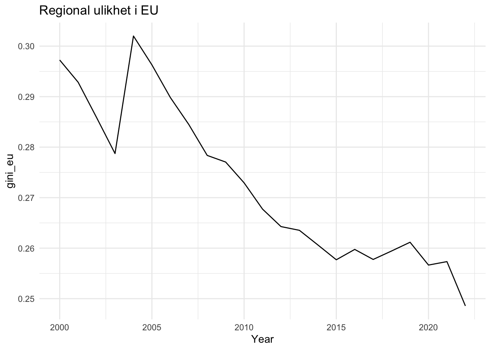
Oppgave 19
Gini-koeffisienten mellom NUTS3-regioner viser en tydelig fallende trend over tid, slik Figure 1 illustrerer. Dette innebærer at regionale forskjeller gradvis reduseres. En slik utvikling er i tråd med målet om å styrke mindre utviklede områder gjennom EUs strukturfond. Figure 1 indikerer også at tiltaket kan ha ønsket effekt.
Oppgave 20
# Kombinerer
eu_data_nested <- gini_n3_nest |>
left_join(gini_NUTS2_nest, by = c("nc", "nc_name")) |>
left_join(gini_NUTS1_nest, by = c("nc", "nc_name")) |>
left_join(gini_NUTSc_nest, by = c("nc", "nc_name"))Plots som viser utviklingen
Oppgave 21
gini_nc |>
filter(!is.na(gini_nc)) |>
mutate(time = as.integer(time)) |>
ggplot(aes(
x = time,
y = gini_nc,
group = nc_name,
color = nc_name
)) +
geom_line() +
theme_minimal() +
labs(
title = "Regional ulikhet over tid",
x = "time",
y = "gini_nc",
color = "nc_name"
)
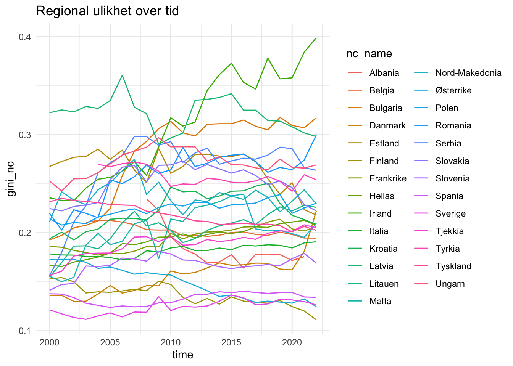
Oppgave 22
gini_nc |>
filter(time == 2022) |>
arrange(desc(gini_nc)) |>
select(nc_name, gini_nc) |>
knitr::kable(digits = 7)| nc_name | gini_nc |
|---|---|
| Irland | 0.3990713 |
| Bulgaria | 0.3172612 |
| Romania | 0.2998082 |
| Latvia | 0.2981280 |
| Ungarn | 0.2692496 |
| Serbia | 0.2637424 |
| Tyrkia | 0.2540632 |
| Polen | 0.2302756 |
| Malta | 0.2294089 |
| Litauen | 0.2259366 |
| Slovakia | 0.2222795 |
| Danmark | 0.2222566 |
| Estland | 0.2180376 |
| Nord-Makedonia | 0.2095793 |
| Kroatia | 0.2085360 |
| Hellas | 0.2077325 |
| Frankrike | 0.2062529 |
| Tjekkia | 0.2050454 |
| Tyskland | 0.2024255 |
| Belgia | 0.1945446 |
| Italia | 0.1907755 |
| Slovenia | 0.1690681 |
| Spania | 0.1340889 |
| Sverige | 0.1263810 |
| Østerrike | 0.1244962 |
| Finland | 0.1111034 |
| Kypros | NaN |
| Luxembourg | NaN |
Oppgave 23
gini_series <- gini_nc |>
transmute(
country = nc_name,
year = as.integer(time),
gini = gini_nc
) |>
filter(!is.na(gini), !is.nan(gini)) |>
arrange(country, year) |>
group_by(country) |>
mutate(
gini_first = first(gini),
year_comp = if (any(year == 2022L)) 2022L else last(year),
gini_comp = if (any(year == 2022L)) gini[year == 2022L][1] else last(gini),
group = if_else(gini_comp < gini_first, "Lower", "Higher")
) |>
ungroup()gini_series |>
filter(group == "Lower") |>
ggplot(aes(year, gini, colour = country, group = country)) +
geom_line() +
labs(title = "Lavere regional ulikhet", x = "Year", y = "Gini-koeffisient", colour = "Land"
) +
theme_minimal()
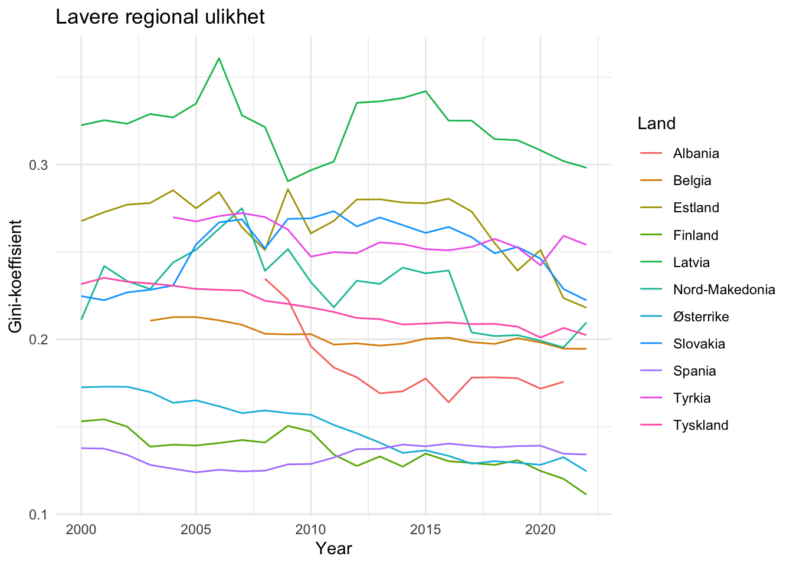
gini_series |>
filter(group == "Higher") |>
ggplot(aes(year, gini, colour = country, group = country)) +
geom_line() +
labs(title = "Høyere regional ulikhet", x = "Year", y = "Gini-koeffisient", colour = "Land"
) +
theme_minimal()
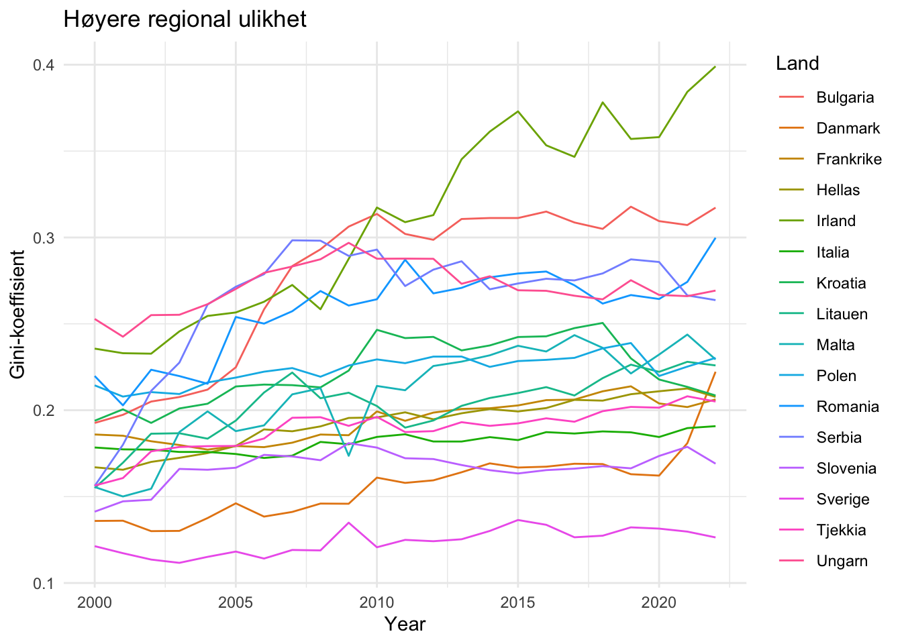
Oppgave 24
gini_n2 |>
filter(nc == "IE", !is.na(gini_n2)) |>
mutate(time = as.integer(time)) |>
ggplot(aes(x = time, y = gini_n2, group = n2, color = n2)) +
geom_line() +
scale_x_continuous(
breaks = seq(2000, 2022, by = 5)
) +
theme_minimal() +
labs(
title = "Regional ulikhet i Irland",
x = "Year",
y = "gini_n2",
color = "n2"
)
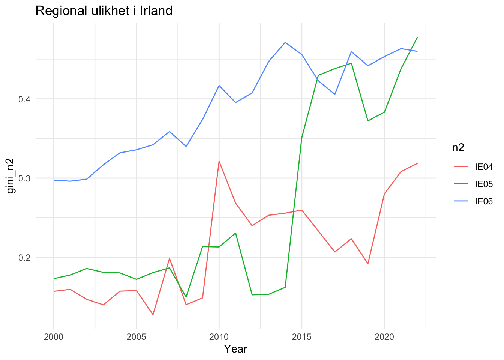
Hvordan er verdiskapningen fordelt mellom regionene i ulike land?
Spania
Oppgave 25
gini_n2 |>
filter(nc == "ES", !is.na(gini_n2)) |>
mutate(time = as.integer(time)) |>
ggplot(aes(x = time, y = gini_n2, group = n2, colour = n2)) +
geom_line() +
scale_x_continuous(breaks = seq(2000, 2022, by = 5)) +
labs(
title = "Regional (NUTS2) ulikhet i Spania",
x = "Year",
y = "gini_n2",
colour = "n2"
) +
theme_minimal() +
theme(
legend.position = "bottom"
)
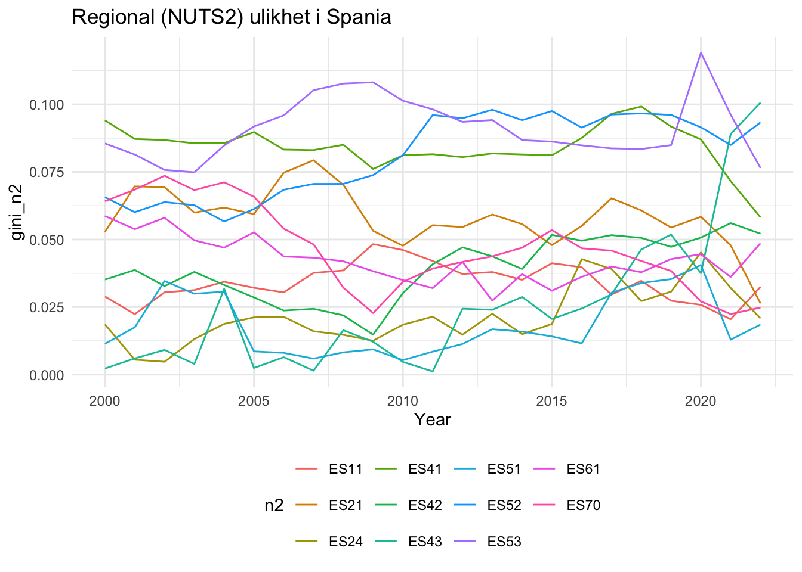
Oppgave 26
gini_n1 |>
filter(nc == "ES", !is.na(gini_n1)) |>
mutate(time = as.integer(time)) |>
ggplot(aes(x = time, y = gini_n1, group = n1, colour = n1)) +
geom_line() +
scale_x_continuous(breaks = seq(2000, 2022, by = 5)) +
labs(
title = "Regional (NUTS1) ulikhet i Spania",
x = "Year",
y = "gini_n1",
colour = "n1"
) +
theme_minimal() +
theme(legend.position = "bottom")
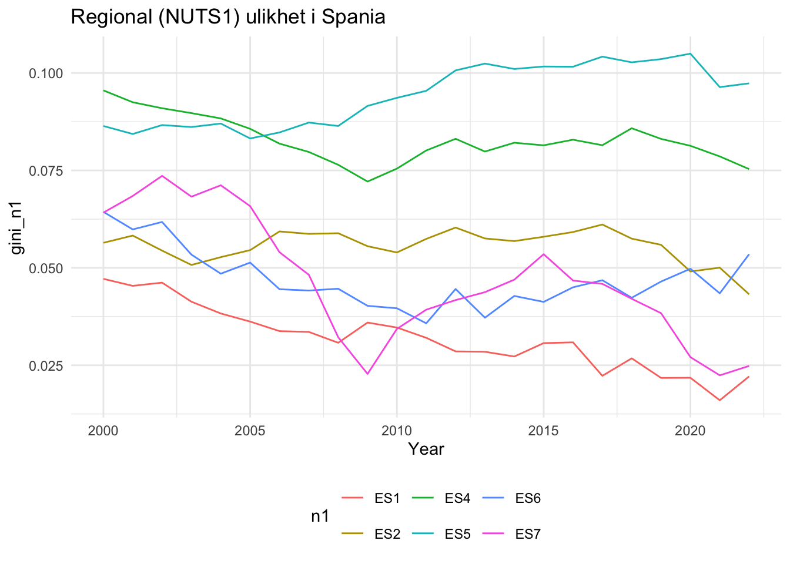
NUTS1-regionene som har hatt økt utjevning kjennetegnes av en fallende eller stabil Gini-koeffisient over tid. Dette indikerer mindre forskjeller i verdiskaping mellom regionene innen disse områdene. Samtidig varierer utviklingen mellom regionene, og figuren alene gir ikke grunnlag for å trekke sterke konklusjoner om årsakene.
Tyskland
Oppgave 27
gini_n2 |>
filter(nc == "DE", !is.na(gini_n2)) |>
mutate(time = as.integer(time)) |>
ggplot(aes(x = time, y = gini_n2, group = n2)) +
geom_line(colour = "black", alpha = 0.7) +
scale_x_continuous(breaks = seq(2000, 2022, by = 5)) +
labs(
title = "Regional (NUTS2) ulikhet i Tyskland",
x = "Year",
y = "gini_n2"
) +
theme_minimal()
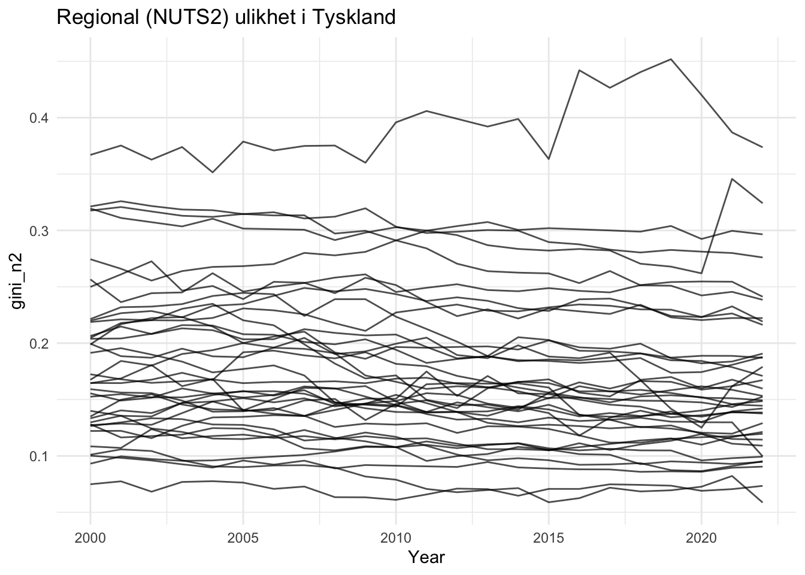
# Finner NUTS2-regionen i Tyskland med høyest observert Gini-koeffisient.
gini_n2 |>
filter(nc == "DE", !is.na(gini_n2)) |>
group_by(n2) |>
summarise(
max_gini = max(gini_n2),
.groups = "drop"
) |>
arrange(desc(max_gini)) |>
slice(1)# A tibble: 1 × 2
n2 max_gini
<chr> <dbl>
1 DE91 0.452Fra Figure 8 ser vi at Gini-koeffisientene for NUTS2-regionene i Tyskland i analyseperioden varierer omtrent fra 0,03 til over 0,45, noe som indikerer betydelige forskjeller mellom regionene. Enkelte NUTS2-regioner har gjennom hele perioden Gini-koeffisienter som ligger klart høyere enn øvrige regioner, noe som tyder på større interne regionale forskjeller, mens andre regioner over tid har hatt gjennomgående lavere nivåer.
Basert på dataene kan regionen med de største observerte regionale forskjellene identifiseres som NUTS2-regionen DE91, som ifølge Wikipedia: NUTS statistical regions of Germany tilsvarer Braunschweig. Denne geografiske plasseringen kan imidlertid ikke leses direkte ut av figuren alene, men fremkommer først når NUTS-kodene kobles til tilhørende regioninformasjon.
Oppgave 28
gini_n1 |>
filter(nc == "DE", !is.na(gini_n1)) |>
mutate(time = as.integer(time)) |>
ggplot(aes(
x = time,
y = gini_n1,
group = n1,
colour = n1
)) +
geom_line() +
scale_x_continuous(breaks = seq(2000, 2022, by = 5)) +
labs(
title = "Regional (NUTS1) ulikhet i Tyskland",
x = "Year",
y = "Gini-koeffisient",
colour = "n1"
) +
theme_minimal() +
theme(
legend.position = "right"
)
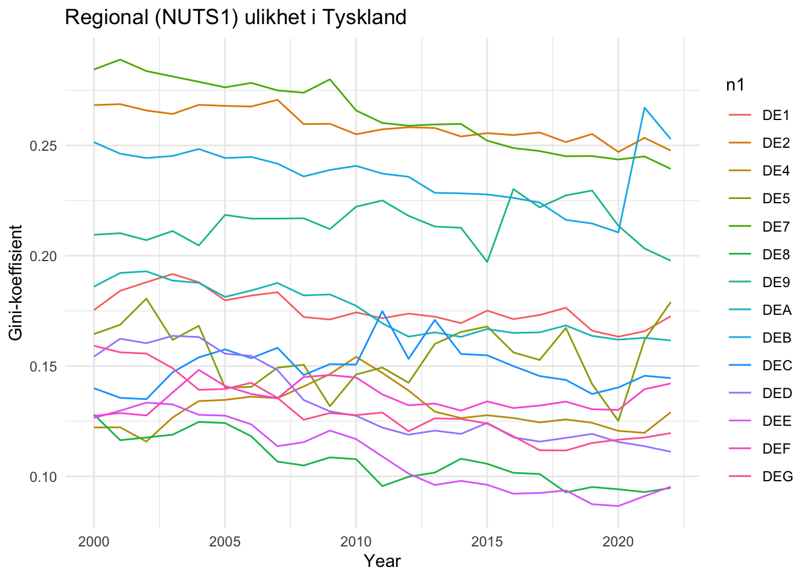
eu_data_nested |>
unnest(NUTS1_data) |>
filter(nc_name == "Tyskland") |>
filter(time == "2022") |>
select(n1, gini_n1, num_reg_n1) |>
arrange(desc(gini_n1)) |>
flextable() |>
line_spacing(space = 0.3) |>
colformat_double(j = 2, digits = 4)n1 | gini_n1 | num_reg_n1 |
|---|---|---|
DEB | 0.2529 | 36 |
DE2 | 0.2477 | 96 |
DE7 | 0.2394 | 26 |
DE9 | 0.1978 | 45 |
DE5 | 0.1790 | 2 |
DE1 | 0.1726 | 44 |
DEA | 0.1616 | 53 |
DEC | 0.1445 | 6 |
DEF | 0.1421 | 15 |
DE4 | 0.1291 | 18 |
DEG | 0.1196 | 22 |
DED | 0.1111 | 13 |
DEE | 0.0953 | 14 |
DE8 | 0.0947 | 8 |
DE3 | 1 | |
DE6 | 1 |
Frakrike
Oppgave 29
gini_n1 |>
filter(nc == "FR", !is.na(gini_n1)) |>
mutate(time = as.integer(time)) |>
ggplot(aes(
x = time,
y = gini_n1,
group = n1,
colour = n1
)) +
geom_line() +
scale_x_continuous(breaks = seq(2000, 2022, by = 5)) +
labs(
title = "Regional (NUTS1) ulikhet i Frankrike",
x = "Year",
y = "gini_n1",
colour = "n1"
) +
theme_minimal() +
theme(
legend.position = "right"
)
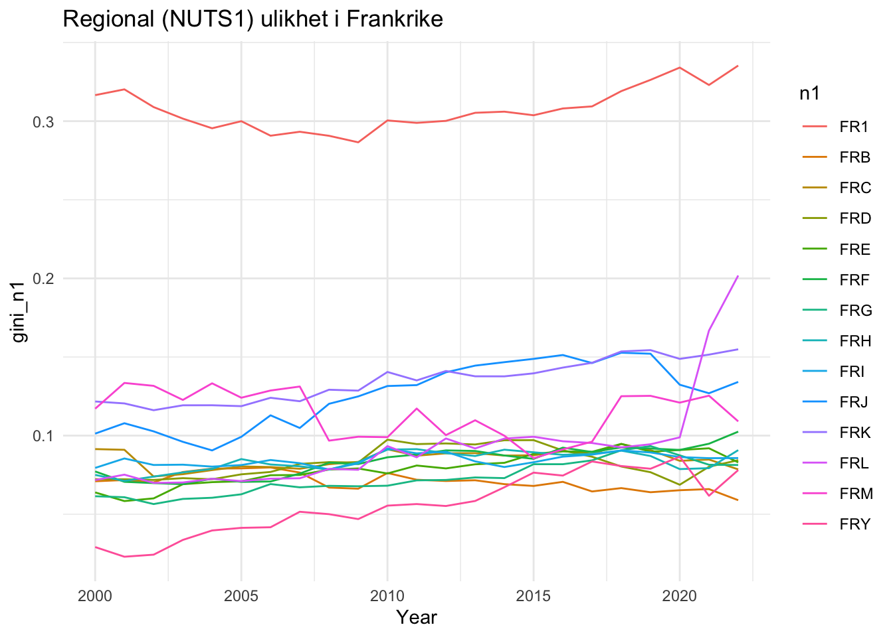
Oppgave 30
# Viser de seks NUTS1-regionene i Frankrike med høyest Gini-koeffisient i 2022.
top6_fr_n1_2022 <- gini_n1 |>
filter(nc == "FR", time == 2022, !is.na(gini_n1)) |>
arrange(desc(gini_n1)) |>
select(n1, gini_n1) |>
slice_head(n = 6)
top6_fr_n1_2022# A tibble: 6 × 2
n1 gini_n1
<chr> <dbl>
1 FR1 0.335
2 FRL 0.202
3 FRK 0.155
4 FRJ 0.134
5 FRM 0.109
6 FRF 0.103Basert på tabellen ser vi at NUTS1-sonen FR1 har suverent høyest Gini-koeffisient i 2022, med en verdi på 0,335, som er klart høyere enn de øvrige regionene. Ifølge Wikipedia: NUTS statistical regions of France tilsvarer FR1 regionen Île-de-France, som ligger i og rundt Paris-området. Dette innebærer at de største regionale forskjellene i Frankrike i 2022 er konsentrert i hovedstadsregionen.
Oppgave 31
eu_data |>
filter(nc == "FR", n1 == "FR1", !is.na(gdp_pc_n3)) |>
mutate(time = as.integer(time)) |>
ggplot(aes(
x = time,
y = gdp_pc_n3,
group = n3,
colour = n3
)) +
geom_line() +
theme_minimal() +
labs(
title = "BNP per innbygger i NUTS3-regionene i Île-de-France",
x = "År",
y = "GDP per capita",
colour = "NUTS3"
)
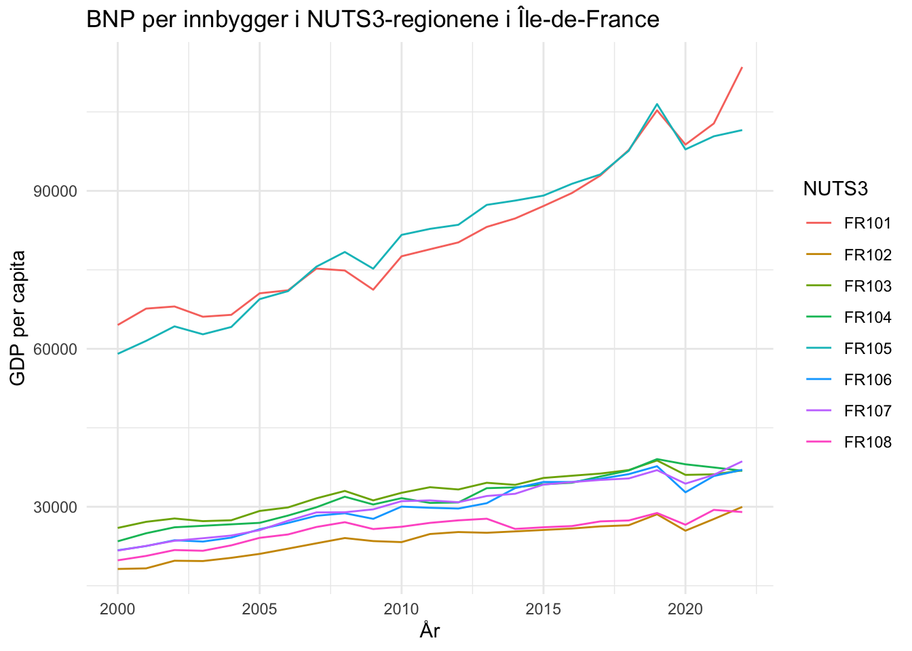
# Viser BNP per innbygger i 2022 for NUTS3-regionene i FR1.
eu_data |>
filter(nc == "FR", n1 == "FR1", time == 2022, !is.na(gdp_pc_n3)) |>
arrange(desc(gdp_pc_n3)) |>
select(n3, gdp_pc_n3)# A tibble: 8 × 2
n3 gdp_pc_n3
<chr> <dbl>
1 FR101 113523.
2 FR105 101546.
3 FR107 38625.
4 FR106 37017.
5 FR103 36897.
6 FR104 36840.
7 FR102 29967.
8 FR108 28995.Oppgave 32
Ja. Ut fra Figure 11 kan vi se at FR1 (Île-de-France) har betydelige interne forskjeller i BNP per innbygger mellom NUTS3-regionene. I 2022 ligger Paris (FR101) og Hauts-de-Seine (FR105) på et svært høyt nivå, med BNP per innbygger på om lag 100 000–115 000, mens de øvrige NUTS3-regionene i FR1 i hovedsak ligger i intervallet rundt 29 000–39 000. Denne tydelige konsentrasjonen av svært høye verdier i noen få NUTS3-regioner, kombinert med betydelig lavere nivåer i resten av regionen, bidrar til å trekke Gini-koeffisienten for FR1 opp.
Enkle modeller
Oppgave 33
n3_data <- eu_data_nested |>
unnest(NUTS3_data) |>
select(nc_name, n2, n3, time, gdp_pc_n3)n2_data <- eu_data_nested |>
unnest(NUTS2_data) |>
select(nc_name, n2, time, gini_n2)NUTS2_diff <- n3_data |>
left_join(n2_data, by = join_by(nc_name, n2, time)) |>
mutate(
diff_gdp_per_capita = c(NA, 100 * diff(gdp_pc_n3)),
diff_gini_nuts2 = c(NA, 100 * diff(gini_n2))
) %>%
filter(complete.cases(.)) |>
group_by(nc_name, n2) |>
nest(.key = "NUTS2_diff")unnest(NUTS2_diff, NUTS2_diff) |>
ungroup() |>
filter(!is.nan(gini_n2)) |>
select(n2) |>
distinct() |>
nrow()[1] 218Oppgave 34
NUTS2_diff <- NUTS2_diff |>
group_by(nc_name, n2) |>
mutate(
modell = map(
.x = NUTS2_diff,
.f = function(a_df) lm('diff_gini_nuts2 ~ diff_gdp_per_capita', data = a_df)
)
)Oppgave 35
NUTS2_diff <- NUTS2_diff |>
group_by(nc_name, n2) |>
mutate(
mod_coeff = bind_rows(
map(.x = modell, .f = coef)
)
)Oppgave 36
NUTS2_diff <- NUTS2_diff |>
group_by(nc_name, n2) |>
mutate(
mod_sum = bind_rows(
map(
.x = modell,
.f = glance
)
)
)Oppgave 37
# Viser de tre NUTS2-regionene med høyest R² i modellen
top3_r2 <- NUTS2_diff |>
ungroup() |>
tidyr::unnest(mod_sum) |>
filter(!is.na(r.squared), !is.nan(r.squared)) |>
arrange(desc(r.squared), nc_name, n2) |>
select(nc_name, n2, NUTS2_diff, modell, mod_coeff, r.squared) |>
slice(1:3)
top3_r2# A tibble: 3 × 6
nc_name n2 NUTS2_diff modell mod_coeff$`(Intercept)` r.squared
<chr> <chr> <list> <list> <dbl> <dbl>
1 Polen PL82 <tibble [92 × 6]> <lm> -0.0364 0.772
2 Tyskland DED5 <tibble [69 × 6]> <lm> 0.00344 0.701
3 Belgia BE22 <tibble [60 × 6]> <lm> 0.129 0.692
# ℹ 1 more variable: mod_coeff$diff_gdp_per_capita <dbl># Viser de tre NUTS2-regionene med lavest R² i modellen
bot3_r2 <- NUTS2_diff |>
ungroup() |>
tidyr::unnest(mod_sum) |>
filter(!is.na(r.squared), !is.nan(r.squared)) |>
arrange(r.squared, nc_name, n2) |>
select(nc_name, n2, NUTS2_diff, modell, mod_coeff, r.squared) |>
slice(1:3)
bot3_r2# A tibble: 3 × 6
nc_name n2 NUTS2_diff modell mod_coeff$`(Intercept)` r.squared
<chr> <chr> <list> <list> <dbl> <dbl>
1 Italia ITH3 <tibble [160 × 6]> <lm> 0.00374 0.000102
2 Tyskland DE26 <tibble [276 × 6]> <lm> -0.00903 0.000150
3 Tyskland DE22 <tibble [276 × 6]> <lm> -0.0500 0.000491
# ℹ 1 more variable: mod_coeff$diff_gdp_per_capita <dbl>Oppgave 38
# Viser de tre NUTS2-regionene med høyest koeffisient for diff_gdp_per_capita
top3_coeff <- NUTS2_diff |>
ungroup() |>
mutate(coeff_diff_gdp = mod_coeff$diff_gdp_per_capita) |>
filter(!is.na(coeff_diff_gdp), !is.nan(coeff_diff_gdp)) |>
arrange(desc(coeff_diff_gdp), nc_name, n2) |>
select(nc_name, n2, NUTS2_diff, modell, coeff_diff_gdp) |>
slice(1:3)
top3_coeff# A tibble: 3 × 5
nc_name n2 NUTS2_diff modell coeff_diff_gdp
<chr> <chr> <list> <list> <dbl>
1 Bulgaria BG34 <tibble [92 × 6]> <lm> 0.0000122
2 Bulgaria BG42 <tibble [115 × 6]> <lm> 0.0000111
3 Tyrkia TRA2 <tibble [76 × 6]> <lm> 0.0000101Oppgave 39
# Teller hvor mange koeffisienter for diff_gdp_per_capita som er signifikante på 5%-nivå
signifikante_koeff <- NUTS2_diff |>
ungroup() |>
tidyr::unnest(mod_sum) |>
filter(!is.na(p.value), !is.nan(p.value)) |>
filter(p.value < 0.05) |>
nrow()
signifikante_koeff[1] 162162 av de 218 estimerte koeffisientene er signifikante på 5 % nivå.
Oppgave 40
# Slår sammen NUTS2-nivådata
d <- NUTS2_diff |> tidyr::unnest(NUTS2_diff)
# Beregner 99,5-persentilen av absoluttverdiene til diff_gdp_per_capita
q <- quantile(abs(d$diff_gdp_per_capita), 0.995, na.rm = TRUE)
# Definerer en skaleringsfaktor
scale_factor <- q / 1e-05
# Skalerer diff_gdp_per_capita ved å dele på skaleringsfaktoren
d <- d |> mutate(diff_gdp_scaled = diff_gdp_per_capita / scale_factor)ggplot(d, aes(x = diff_gdp_scaled)) +
geom_density(
na.rm = TRUE,
color = "black",
linewidth = 1,
bw = 2e-06
) +
geom_vline(
xintercept = mean(d$diff_gdp_scaled, na.rm = TRUE),
linetype = "dashed",
color = "grey40"
) +
coord_cartesian(xlim = c(-2e-05, 1e-05)) +
labs(
title = "Tetthetsfordeling av diff_gdp_per_capita",
x = "diff_gdp_per_capita",
y = "density"
) +
theme_grey()
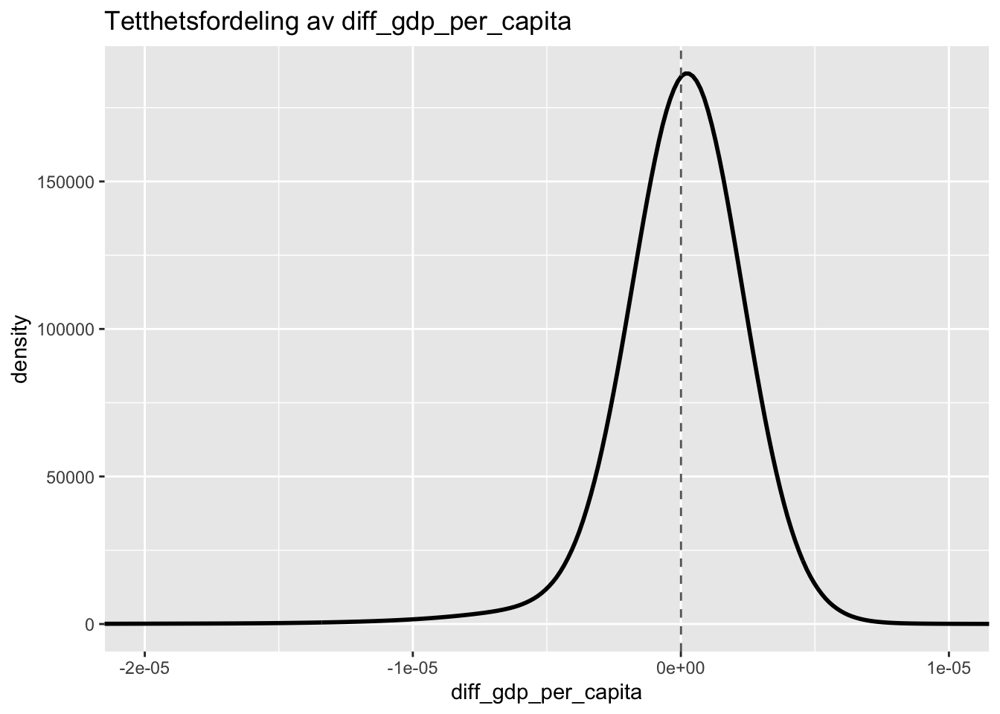
Oppgave 41
# Teller hvor mange regresjonskoeffisienter for diff_gdp_per_capita som er positive
positive_coeff <- NUTS2_diff |>
ungroup() |>
mutate(coeff_diff_gdp = mod_coeff$diff_gdp_per_capita) |>
filter(!is.na(coeff_diff_gdp)) |>
summarise(
totalt = n(),
positive = sum(coeff_diff_gdp > 0)
)
positive_coeff# A tibble: 1 × 2
totalt positive
<int> <int>
1 218 132132 av de 218 estimerte regresjonskoeffisientene for diff_gdp_per_capita er X positive.
Oppgave 42
NUTS2_diff |>
ungroup() |>
mutate(coeff_diff_gdp = mod_coeff$diff_gdp_per_capita) |>
filter(!is.na(coeff_diff_gdp)) |>
summarise(
mean_coeff = mean(coeff_diff_gdp),
median_coeff = median(coeff_diff_gdp)
)# A tibble: 1 × 2
mean_coeff median_coeff
<dbl> <dbl>
1 0.000000816 0.000000528Oppgave 43
# Utfører en ensidig t-test for å teste om gjennomsnittet av
# diff_gdp_per_capita er signifikant større enn 0
t_test_diff <- t.test(
NUTS2_diff$mod_coeff$diff_gdp_per_capita,
alternative = "greater",
mu = 0
)
t_test_diff
One Sample t-test
data: NUTS2_diff$mod_coeff$diff_gdp_per_capita
t = 3.7658, df = 217, p-value = 0.0001069
alternative hypothesis: true mean is greater than 0
95 percent confidence interval:
4.583272e-07 Inf
sample estimates:
mean of x
8.16482e-07 Ja, diff_gdp_per_capita er signifikant større enn 0.
Panel modell
Oppgave 44
d_panel <- d %>%
ungroup() %>%
select(n3, time, diff_gini_nuts2, diff_gdp_per_capita) %>%
filter(!is.na(n3), !is.na(time))
p_mod <- plm(
diff_gini_nuts2 ~ diff_gdp_per_capita,
data = d_panel,
index = c("n3", "time")
)Oppgave 45
summary(p_mod)Oneway (individual) effect Within Model
Call:
plm(formula = diff_gini_nuts2 ~ diff_gdp_per_capita, data = d_panel,
index = c("n3", "time"))
Unbalanced Panel: n = 1186, T = 13-23, N = 26700
Residuals:
Min. 1st Qu. Median 3rd Qu. Max.
-37.335219 -0.559292 -0.035798 0.505712 27.300139
Coefficients:
Estimate Std. Error t-value Pr(>|t|)
diff_gdp_per_capita 3.9320e-07 2.4694e-08 15.923 < 2.2e-16 ***
---
Signif. codes: 0 '***' 0.001 '**' 0.01 '*' 0.05 '.' 0.1 ' ' 1
Total Sum of Squares: 78060
Residual Sum of Squares: 77291
R-Squared: 0.0098397
Adj. R-Squared: -0.036189
F-statistic: 253.536 on 1 and 25513 DF, p-value: < 2.22e-16Oppgave 46
summary(
p_mod,
vcov = function(x) plm::vcovHC(x, method = "white2")
)Oneway (individual) effect Within Model
Note: Coefficient variance-covariance matrix supplied: function(x) plm::vcovHC(x, method = "white2")
Call:
plm(formula = diff_gini_nuts2 ~ diff_gdp_per_capita, data = d_panel,
index = c("n3", "time"))
Unbalanced Panel: n = 1186, T = 13-23, N = 26700
Residuals:
Min. 1st Qu. Median 3rd Qu. Max.
-37.335219 -0.559292 -0.035798 0.505712 27.300139
Coefficients:
Estimate Std. Error t-value Pr(>|t|)
diff_gdp_per_capita 3.9320e-07 2.7778e-08 14.155 < 2.2e-16 ***
---
Signif. codes: 0 '***' 0.001 '**' 0.01 '*' 0.05 '.' 0.1 ' ' 1
Total Sum of Squares: 78060
Residual Sum of Squares: 77291
R-Squared: 0.0098397
Adj. R-Squared: -0.036189
F-statistic: 200.369 on 1 and 1185 DF, p-value: < 2.22e-16Her benyttes en alternativ måte å generere summary() for panelmodellen ved å spesifisere en egen varians–kovariansmatrise for koeffisientene. Ved å bruke vcovHC() med metoden “white2” beregnes heteroskedastisitets-robuste standardfeil.
De to summary-ene er basert på samme panelregresjonsmodell og gir identiske koeffisientestimater, men standardfeilene og tilhørende teststatistikker avviker. I den ordinære summary()-en er standardfeilen 2.4694e−08 og t-verdien 15.923, mens den alternative summary()-en som benytter heteroskedastisitets-robuste standardfeil via vcovHC() gir en høyere standardfeil på 2.7778e−08 og en lavere t-verdi på 14.155. Tilsvarende er F-statistikken 253.536 (1 og 25513 frihetsgrader) i den ordinære summary()-en, mot 200.369 (1 og 1185 frihetsgrader) i den robuste versjonen. Forskjellene skyldes bruken av ulike varians–kovariansmatriser, mens den overordnede statistiske konklusjonen forblir uendret.